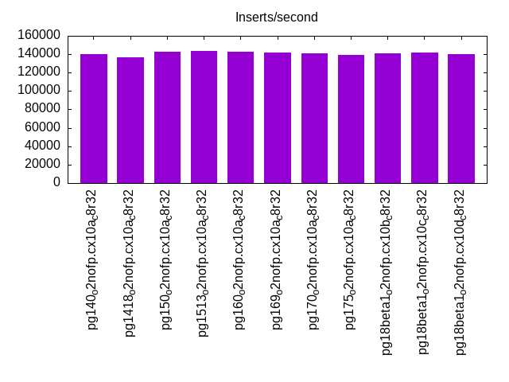
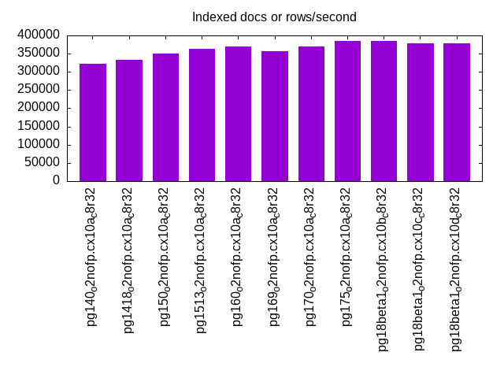
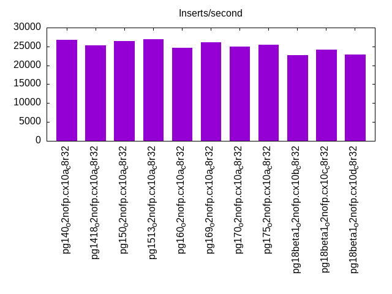
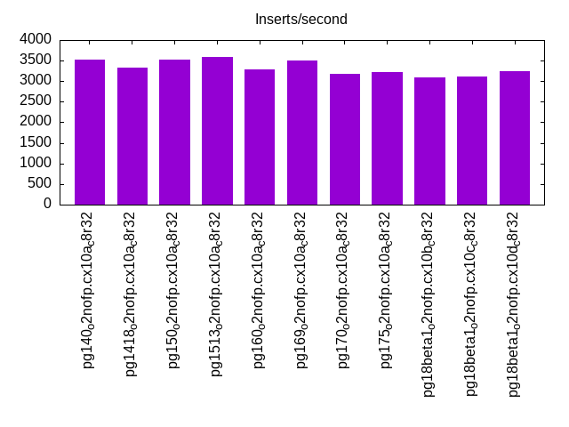
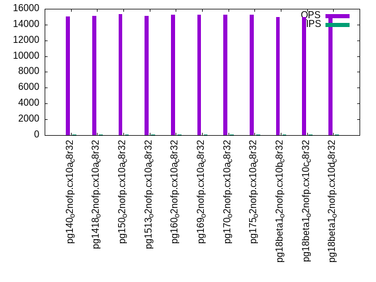
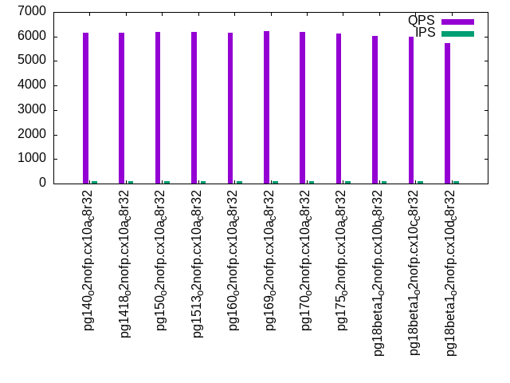
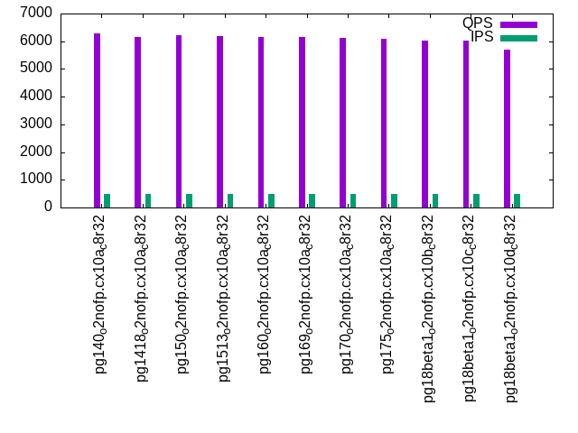
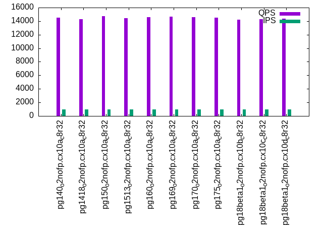
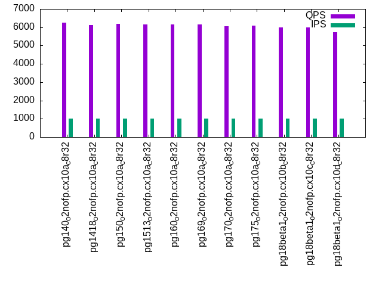

This is a report for the insert benchmark with 20M docs and 1 client(s). It is generated by scripts (bash, awk, sed) and Tufte might not be impressed. An overview of the insert benchmark is here and a short update is here. Below, by DBMS, I mean DBMS+version.config. An example is my8020.c10b40 where my means MySQL, 8020 is version 8.0.20 and c10b40 is the name for the configuration file.
The test server has 8 AMD cores, 32G RAM and an NVMe SSD. It is described here as the PN53. The benchmark was run with 1 client and there were 1 or 3 connections per client (1 for queries or inserts without rate limits, 1+1 for rate limited inserts+deletes). It uses 1 table. It loads 20M rows per table without secondary indexes, creates 3 secondary indexes per table, then inserts 40m+10m rows per table with a delete per insert to avoid growing the table. It then does 6 read+write tests for 1800s each that do queries as fast as possible with 100,100,500,500,1000,1000 inserts/s and the same for deletes/s per client concurrent with the queries. The database is cached by Postgres. Clients and the DBMS share one server. The per-database configs are in the per-database subdirectories here.
The tested DBMS are:
The numbers are inserts/s for l.i0, l.i1 and l.i2, indexed docs (or rows) /s for l.x and queries/s for qr100, qp100 thru qr1000, qp1000" The values are the average rate over the entire test for inserts (IPS) and queries (QPS). The range of values for IPS and QPS is split into 3 parts: bottom 25%, middle 50%, top 25%. Values in the bottom 25% have a red background, values in the top 25% have a green background and values in the middle have no color. A gray background is used for values that can be ignored because the DBMS did not sustain the target insert rate. Red backgrounds are not used when the minimum value is within 80% of the max value.
| dbms | l.i0 | l.x | l.i1 | l.i2 | qr100 | qp100 | qr500 | qp500 | qr1000 | qp1000 |
|---|---|---|---|---|---|---|---|---|---|---|
| pg140_o2nofp.cx10a_c8r32 | 139860 | 322582 | 26828 | 3516 | 15036 | 6166 | 14633 | 6278 | 14490 | 6266 |
| pg1418_o2nofp.cx10a_c8r32 | 136986 | 333335 | 25332 | 3322 | 15080 | 6168 | 14394 | 6150 | 14309 | 6130 |
| pg150_o2nofp.cx10a_c8r32 | 142857 | 350879 | 26472 | 3515 | 15335 | 6193 | 14677 | 6226 | 14746 | 6200 |
| pg1513_o2nofp.cx10a_c8r32 | 143885 | 363638 | 26900 | 3598 | 15133 | 6192 | 14453 | 6188 | 14408 | 6156 |
| pg160_o2nofp.cx10a_c8r32 | 142857 | 370372 | 24600 | 3287 | 15236 | 6148 | 14699 | 6152 | 14584 | 6150 |
| pg169_o2nofp.cx10a_c8r32 | 141844 | 357145 | 26127 | 3511 | 15289 | 6219 | 14718 | 6143 | 14642 | 6164 |
| pg170_o2nofp.cx10a_c8r32 | 140845 | 370372 | 24969 | 3168 | 15258 | 6170 | 14563 | 6106 | 14556 | 6072 |
| pg175_o2nofp.cx10a_c8r32 | 138889 | 384617 | 25413 | 3229 | 15276 | 6135 | 14429 | 6089 | 14499 | 6082 |
| pg18beta1_o2nofp.cx10b_c8r32 | 140845 | 384617 | 22688 | 3089 | 14983 | 6020 | 14276 | 6013 | 14191 | 6003 |
| pg18beta1_o2nofp.cx10c_c8r32 | 141844 | 377360 | 24184 | 3109 | 14966 | 5994 | 14236 | 6011 | 14277 | 5985 |
| pg18beta1_o2nofp.cx10d_c8r32 | 139860 | 377360 | 22792 | 3233 | 14865 | 5734 | 14316 | 5710 | 14369 | 5731 |
This table has relative throughput, throughput for the DBMS relative to the DBMS in the first line, using the absolute throughput from the previous table. Values less than 0.95 have a yellow background. Values greater than 1.05 have a blue background.
| dbms | l.i0 | l.x | l.i1 | l.i2 | qr100 | qp100 | qr500 | qp500 | qr1000 | qp1000 |
|---|---|---|---|---|---|---|---|---|---|---|
| pg140_o2nofp.cx10a_c8r32 | 1.00 | 1.00 | 1.00 | 1.00 | 1.00 | 1.00 | 1.00 | 1.00 | 1.00 | 1.00 |
| pg1418_o2nofp.cx10a_c8r32 | 0.98 | 1.03 | 0.94 | 0.94 | 1.00 | 1.00 | 0.98 | 0.98 | 0.99 | 0.98 |
| pg150_o2nofp.cx10a_c8r32 | 1.02 | 1.09 | 0.99 | 1.00 | 1.02 | 1.00 | 1.00 | 0.99 | 1.02 | 0.99 |
| pg1513_o2nofp.cx10a_c8r32 | 1.03 | 1.13 | 1.00 | 1.02 | 1.01 | 1.00 | 0.99 | 0.99 | 0.99 | 0.98 |
| pg160_o2nofp.cx10a_c8r32 | 1.02 | 1.15 | 0.92 | 0.93 | 1.01 | 1.00 | 1.00 | 0.98 | 1.01 | 0.98 |
| pg169_o2nofp.cx10a_c8r32 | 1.01 | 1.11 | 0.97 | 1.00 | 1.02 | 1.01 | 1.01 | 0.98 | 1.01 | 0.98 |
| pg170_o2nofp.cx10a_c8r32 | 1.01 | 1.15 | 0.93 | 0.90 | 1.01 | 1.00 | 1.00 | 0.97 | 1.00 | 0.97 |
| pg175_o2nofp.cx10a_c8r32 | 0.99 | 1.19 | 0.95 | 0.92 | 1.02 | 0.99 | 0.99 | 0.97 | 1.00 | 0.97 |
| pg18beta1_o2nofp.cx10b_c8r32 | 1.01 | 1.19 | 0.85 | 0.88 | 1.00 | 0.98 | 0.98 | 0.96 | 0.98 | 0.96 |
| pg18beta1_o2nofp.cx10c_c8r32 | 1.01 | 1.17 | 0.90 | 0.88 | 1.00 | 0.97 | 0.97 | 0.96 | 0.99 | 0.96 |
| pg18beta1_o2nofp.cx10d_c8r32 | 1.00 | 1.17 | 0.85 | 0.92 | 0.99 | 0.93 | 0.98 | 0.91 | 0.99 | 0.91 |
This lists the average rate of inserts/s for the tests that do inserts concurrent with queries. For such tests the query rate is listed in the table above. The read+write tests are setup so that the insert rate should match the target rate every second. Cells that are not at least 95% of the target have a red background to indicate a failure to satisfy the target.
| dbms | qr100.L1 | qp100.L2 | qr500.L3 | qp500.L4 | qr1000.L5 | qp1000.L6 |
|---|---|---|---|---|---|---|
| pg140_o2nofp.cx10a_c8r32 | 100 | 100 | 500 | 500 | 1000 | 1000 |
| pg1418_o2nofp.cx10a_c8r32 | 100 | 100 | 500 | 500 | 999 | 999 |
| pg150_o2nofp.cx10a_c8r32 | 100 | 100 | 500 | 500 | 999 | 999 |
| pg1513_o2nofp.cx10a_c8r32 | 100 | 100 | 500 | 500 | 1000 | 999 |
| pg160_o2nofp.cx10a_c8r32 | 100 | 100 | 500 | 500 | 999 | 999 |
| pg169_o2nofp.cx10a_c8r32 | 100 | 100 | 500 | 500 | 999 | 999 |
| pg170_o2nofp.cx10a_c8r32 | 100 | 100 | 500 | 500 | 999 | 999 |
| pg175_o2nofp.cx10a_c8r32 | 100 | 100 | 500 | 500 | 1000 | 999 |
| pg18beta1_o2nofp.cx10b_c8r32 | 100 | 100 | 500 | 500 | 1000 | 1000 |
| pg18beta1_o2nofp.cx10c_c8r32 | 100 | 100 | 500 | 500 | 999 | 999 |
| pg18beta1_o2nofp.cx10d_c8r32 | 100 | 100 | 500 | 500 | 999 | 999 |
| target | 100 | 100 | 500 | 500 | 1000 | 1000 |
l.i0: load without secondary indexes. Graphs for performance per 1-second interval are here.
Average throughput:
Insert response time histogram: each cell has the percentage of responses that take <= the time in the header and max is the max response time in seconds. For the max column values in the top 25% of the range have a red background and in the bottom 25% of the range have a green background. The red background is not used when the min value is within 80% of the max value.
| dbms | 256us | 1ms | 4ms | 16ms | 64ms | 256ms | 1s | 4s | 16s | gt | max |
|---|---|---|---|---|---|---|---|---|---|---|---|
| pg140_o2nofp.cx10a_c8r32 | 99.980 | 0.020 | 0.003 | ||||||||
| pg1418_o2nofp.cx10a_c8r32 | 99.979 | 0.020 | 0.001 | 0.005 | |||||||
| pg150_o2nofp.cx10a_c8r32 | 99.984 | 0.015 | 0.003 | ||||||||
| pg1513_o2nofp.cx10a_c8r32 | 99.989 | 0.011 | 0.002 | ||||||||
| pg160_o2nofp.cx10a_c8r32 | 99.987 | 0.013 | 0.002 | ||||||||
| pg169_o2nofp.cx10a_c8r32 | 99.986 | 0.014 | 0.002 | ||||||||
| pg170_o2nofp.cx10a_c8r32 | 99.988 | 0.012 | 0.002 | ||||||||
| pg175_o2nofp.cx10a_c8r32 | 99.982 | 0.018 | 0.003 | ||||||||
| pg18beta1_o2nofp.cx10b_c8r32 | 99.989 | 0.011 | 0.002 | ||||||||
| pg18beta1_o2nofp.cx10c_c8r32 | 99.984 | 0.017 | 0.002 | ||||||||
| pg18beta1_o2nofp.cx10d_c8r32 | 99.980 | 0.020 | 0.002 |
Performance metrics for the DBMS listed above. Some are normalized by throughput, others are not. Legend for results is here.
ips qps rps rmbps wps wmbps rpq rkbpq wpi wkbpi csps cpups cspq cpupq dbgb1 dbgb2 rss maxop p50 p99 tag 139860 0 0 0.0 523.5 59.2 0.000 0.000 0.004 0.433 16764 19.7 0.120 11 1.9 5.2 0.8 0.003 140183 135583 pg140_o2nofp.cx10a_c8r32 136986 0 0 0.0 513.2 57.9 0.000 0.000 0.004 0.433 16480 19.5 0.120 11 1.9 5.2 2.0 0.005 137483 130883 pg1418_o2nofp.cx10a_c8r32 142857 0 0 0.0 533.4 60.5 0.000 0.000 0.004 0.434 17013 19.5 0.119 11 1.9 5.2 0.4 0.003 143384 137987 pg150_o2nofp.cx10a_c8r32 143885 0 0 0.0 541.1 61.4 0.000 0.000 0.004 0.437 17060 19.9 0.119 11 1.9 5.2 1.7 0.002 143683 136285 pg1513_o2nofp.cx10a_c8r32 142857 0 0 0.0 532.9 60.4 0.000 0.000 0.004 0.433 16959 19.8 0.119 11 1.9 5.2 1.7 0.002 142884 138284 pg160_o2nofp.cx10a_c8r32 141844 0 0 0.0 532.9 60.5 0.000 0.000 0.004 0.437 16918 19.7 0.119 11 1.9 5.2 0.4 0.002 143472 137884 pg169_o2nofp.cx10a_c8r32 140845 0 0 0.0 529.9 60.1 0.000 0.000 0.004 0.437 14473 19.6 0.103 11 1.9 5.2 1.6 0.002 142079 135682 pg170_o2nofp.cx10a_c8r32 138889 0 0 0.0 524.3 59.4 0.000 0.000 0.004 0.438 14300 19.8 0.103 11 1.9 5.2 1.6 0.003 140680 132885 pg175_o2nofp.cx10a_c8r32 140845 0 0 0.0 526.6 59.7 0.000 0.000 0.004 0.434 14333 19.8 0.102 11 1.9 5.2 1.2 0.002 141075 133683 pg18beta1_o2nofp.cx10b_c8r32 141844 0 0 0.0 529.4 60.0 0.000 0.000 0.004 0.433 14363 19.9 0.101 11 1.9 5.2 1.6 0.002 141782 134184 pg18beta1_o2nofp.cx10c_c8r32 139860 0 0 0.0 524.6 59.5 0.000 0.000 0.004 0.435 14210 19.8 0.102 11 1.9 5.2 1.6 0.002 140983 133285 pg18beta1_o2nofp.cx10d_c8r32
l.x: create secondary indexes.
Average throughput:
Performance metrics for the DBMS listed above. Some are normalized by throughput, others are not. Legend for results is here.
ips qps rps rmbps wps wmbps rpq rkbpq wpi wkbpi csps cpups cspq cpupq dbgb1 dbgb2 rss maxop p50 p99 tag 322582 0 0 0.0 644.2 78.8 0.000 0.000 0.002 0.250 1934 11.4 0.006 3 3.9 8.9 2.1 0.002 NA NA pg140_o2nofp.cx10a_c8r32 333335 0 0 0.0 756.9 92.7 0.000 0.000 0.002 0.285 2049 11.3 0.006 3 3.9 8.9 2.1 0.002 NA NA pg1418_o2nofp.cx10a_c8r32 350879 0 0 0.0 704.2 86.3 0.000 0.000 0.002 0.252 2046 11.3 0.006 3 3.9 8.9 2.1 0.002 NA NA pg150_o2nofp.cx10a_c8r32 363638 0 1 0.0 846.2 104.0 0.000 0.000 0.002 0.293 1584 11.5 0.004 3 3.9 8.9 2.1 0.002 NA NA pg1513_o2nofp.cx10a_c8r32 370372 0 1 0.0 848.2 104.3 0.000 0.000 0.002 0.288 1662 11.5 0.004 2 3.9 8.9 2.1 0.002 NA NA pg160_o2nofp.cx10a_c8r32 357145 0 0 0.0 720.9 88.4 0.000 0.000 0.002 0.253 2163 11.4 0.006 3 3.9 8.9 2.1 0.002 NA NA pg169_o2nofp.cx10a_c8r32 370372 0 0 0.0 543.8 66.6 0.000 0.000 0.001 0.184 1707 11.5 0.005 2 3.9 8.9 2.1 0.002 NA NA pg170_o2nofp.cx10a_c8r32 384617 0 0 0.0 616.1 75.4 0.000 0.000 0.002 0.201 1997 11.7 0.005 2 3.9 8.9 2.1 0.002 NA NA pg175_o2nofp.cx10a_c8r32 384617 0 0 0.0 619.5 75.9 0.000 0.000 0.002 0.202 1954 11.7 0.005 2 3.9 8.9 2.1 0.002 NA NA pg18beta1_o2nofp.cx10b_c8r32 377360 0 0 0.0 605.8 74.1 0.000 0.000 0.002 0.201 1933 11.5 0.005 2 3.9 8.9 2.1 0.002 NA NA pg18beta1_o2nofp.cx10c_c8r32 377360 0 0 0.0 602.5 73.7 0.000 0.000 0.002 0.200 1928 11.5 0.005 2 3.9 8.9 2.1 0.002 NA NA pg18beta1_o2nofp.cx10d_c8r32
l.i1: continue load after secondary indexes created with 50 inserts per transaction. Graphs for performance per 1-second interval are here.
Average throughput:
Insert response time histogram: each cell has the percentage of responses that take <= the time in the header and max is the max response time in seconds. For the max column values in the top 25% of the range have a red background and in the bottom 25% of the range have a green background. The red background is not used when the min value is within 80% of the max value.
| dbms | 256us | 1ms | 4ms | 16ms | 64ms | 256ms | 1s | 4s | 16s | gt | max |
|---|---|---|---|---|---|---|---|---|---|---|---|
| pg140_o2nofp.cx10a_c8r32 | 52.106 | 47.893 | 0.001 | nonzero | 0.057 | ||||||
| pg1418_o2nofp.cx10a_c8r32 | 55.195 | 44.795 | 0.001 | 0.009 | 0.049 | ||||||
| pg150_o2nofp.cx10a_c8r32 | 48.105 | 51.894 | 0.001 | 0.001 | 0.043 | ||||||
| pg1513_o2nofp.cx10a_c8r32 | 52.287 | 47.712 | 0.001 | nonzero | 0.021 | ||||||
| pg160_o2nofp.cx10a_c8r32 | 49.730 | 50.269 | 0.001 | nonzero | 0.026 | ||||||
| pg169_o2nofp.cx10a_c8r32 | 47.592 | 52.407 | 0.001 | 0.001 | 0.035 | ||||||
| pg170_o2nofp.cx10a_c8r32 | 62.833 | 37.166 | 0.001 | 0.001 | 0.033 | ||||||
| pg175_o2nofp.cx10a_c8r32 | 61.423 | 38.576 | nonzero | 0.001 | 0.030 | ||||||
| pg18beta1_o2nofp.cx10b_c8r32 | 55.584 | 44.411 | 0.004 | 0.001 | 0.059 | ||||||
| pg18beta1_o2nofp.cx10c_c8r32 | 52.173 | 47.818 | 0.002 | 0.008 | 0.050 | ||||||
| pg18beta1_o2nofp.cx10d_c8r32 | 54.231 | 45.767 | 0.001 | 0.001 | 0.028 |
Delete response time histogram: each cell has the percentage of responses that take <= the time in the header and max is the max response time in seconds. For the max column values in the top 25% of the range have a red background and in the bottom 25% of the range have a green background. The red background is not used when the min value is within 80% of the max value.
| dbms | 256us | 1ms | 4ms | 16ms | 64ms | 256ms | 1s | 4s | 16s | gt | max |
|---|---|---|---|---|---|---|---|---|---|---|---|
| pg140_o2nofp.cx10a_c8r32 | 29.212 | 70.767 | 0.020 | 0.001 | 0.056 | ||||||
| pg1418_o2nofp.cx10a_c8r32 | 30.077 | 57.242 | 12.677 | 0.005 | 0.046 | ||||||
| pg150_o2nofp.cx10a_c8r32 | 29.665 | 70.315 | 0.019 | 0.001 | 0.044 | ||||||
| pg1513_o2nofp.cx10a_c8r32 | 30.359 | 69.618 | 0.023 | nonzero | 0.028 | ||||||
| pg160_o2nofp.cx10a_c8r32 | 29.303 | 58.354 | 12.343 | nonzero | 0.030 | ||||||
| pg169_o2nofp.cx10a_c8r32 | 28.678 | 71.299 | 0.022 | 0.001 | 0.035 | ||||||
| pg170_o2nofp.cx10a_c8r32 | 27.842 | 60.098 | 12.059 | 0.001 | 0.033 | ||||||
| pg175_o2nofp.cx10a_c8r32 | 27.450 | 61.732 | 10.817 | 0.001 | 0.030 | ||||||
| pg18beta1_o2nofp.cx10b_c8r32 | 26.747 | 56.502 | 16.750 | 0.001 | 0.027 | ||||||
| pg18beta1_o2nofp.cx10c_c8r32 | 27.270 | 69.559 | 3.165 | 0.006 | 0.049 | ||||||
| pg18beta1_o2nofp.cx10d_c8r32 | 27.140 | 56.922 | 15.937 | 0.001 | 0.030 |
Performance metrics for the DBMS listed above. Some are normalized by throughput, others are not. Legend for results is here.
ips qps rps rmbps wps wmbps rpq rkbpq wpi wkbpi csps cpups cspq cpupq dbgb1 dbgb2 rss maxop p50 p99 tag 26828 0 0 0.0 299.5 32.2 0.000 0.000 0.011 1.228 12891 22.9 0.481 68 5.3 32.1 5.2 0.057 21098 14447 pg140_o2nofp.cx10a_c8r32 25332 0 0 0.0 281.4 30.2 0.000 0.000 0.011 1.221 12266 22.4 0.484 71 5.4 32.0 2.5 0.049 19798 9998 pg1418_o2nofp.cx10a_c8r32 26472 0 0 0.0 292.8 31.6 0.000 0.000 0.011 1.224 13313 22.8 0.503 69 5.4 32.1 2.5 0.043 20946 14248 pg150_o2nofp.cx10a_c8r32 26900 0 0 0.0 297.6 32.2 0.000 0.000 0.011 1.225 13542 22.8 0.503 68 5.4 32.1 4.3 0.021 21196 14198 pg1513_o2nofp.cx10a_c8r32 24600 0 0 0.0 272.3 29.4 0.000 0.000 0.011 1.225 12397 22.2 0.504 72 5.4 32.1 3.6 0.026 18747 9948 pg160_o2nofp.cx10a_c8r32 26127 0 0 0.0 289.2 31.3 0.000 0.000 0.011 1.226 13086 22.8 0.501 70 5.4 32.1 5.4 0.035 20347 14198 pg169_o2nofp.cx10a_c8r32 24969 0 0 0.0 278.1 30.6 0.000 0.000 0.011 1.255 10337 21.9 0.414 70 5.3 32.1 4.0 0.033 21598 8699 pg170_o2nofp.cx10a_c8r32 25413 0 0 0.0 282.8 31.1 0.000 0.000 0.011 1.254 10500 22.1 0.413 70 5.3 32.0 5.3 0.030 22546 8448 pg175_o2nofp.cx10a_c8r32 22688 0 0 0.0 253.2 28.0 0.000 0.000 0.011 1.266 9423 21.4 0.415 75 5.4 32.0 4.2 0.059 15748 8849 pg18beta1_o2nofp.cx10b_c8r32 24184 0 0 0.0 272.0 30.1 0.000 0.000 0.011 1.273 10125 21.9 0.419 72 5.4 32.0 1.5 0.050 18447 9648 pg18beta1_o2nofp.cx10c_c8r32 22792 0 0 0.0 255.7 28.3 0.000 0.000 0.011 1.272 9502 21.5 0.417 75 5.4 32.1 4.8 0.028 15848 9098 pg18beta1_o2nofp.cx10d_c8r32
l.i2: continue load after secondary indexes created with 5 inserts per transaction. Graphs for performance per 1-second interval are here.
Average throughput:
Insert response time histogram: each cell has the percentage of responses that take <= the time in the header and max is the max response time in seconds. For the max column values in the top 25% of the range have a red background and in the bottom 25% of the range have a green background. The red background is not used when the min value is within 80% of the max value.
| dbms | 256us | 1ms | 4ms | 16ms | 64ms | 256ms | 1s | 4s | 16s | gt | max |
|---|---|---|---|---|---|---|---|---|---|---|---|
| pg140_o2nofp.cx10a_c8r32 | 58.694 | 41.306 | nonzero | nonzero | 0.004 | ||||||
| pg1418_o2nofp.cx10a_c8r32 | 58.665 | 41.335 | nonzero | nonzero | nonzero | 0.031 | |||||
| pg150_o2nofp.cx10a_c8r32 | 58.031 | 41.969 | nonzero | nonzero | 0.007 | ||||||
| pg1513_o2nofp.cx10a_c8r32 | 59.772 | 40.228 | nonzero | nonzero | nonzero | 0.050 | |||||
| pg160_o2nofp.cx10a_c8r32 | 54.883 | 45.117 | nonzero | nonzero | nonzero | 0.025 | |||||
| pg169_o2nofp.cx10a_c8r32 | 56.139 | 43.861 | nonzero | nonzero | 0.005 | ||||||
| pg170_o2nofp.cx10a_c8r32 | 61.505 | 38.495 | nonzero | nonzero | 0.010 | ||||||
| pg175_o2nofp.cx10a_c8r32 | 58.218 | 41.781 | nonzero | nonzero | nonzero | 0.036 | |||||
| pg18beta1_o2nofp.cx10b_c8r32 | 56.587 | 43.412 | nonzero | nonzero | nonzero | 0.032 | |||||
| pg18beta1_o2nofp.cx10c_c8r32 | 54.090 | 45.909 | nonzero | nonzero | 0.008 | ||||||
| pg18beta1_o2nofp.cx10d_c8r32 | 56.056 | 43.944 | nonzero | nonzero | 0.032 |
Delete response time histogram: each cell has the percentage of responses that take <= the time in the header and max is the max response time in seconds. For the max column values in the top 25% of the range have a red background and in the bottom 25% of the range have a green background. The red background is not used when the min value is within 80% of the max value.
| dbms | 256us | 1ms | 4ms | 16ms | 64ms | 256ms | 1s | 4s | 16s | gt | max |
|---|---|---|---|---|---|---|---|---|---|---|---|
| pg140_o2nofp.cx10a_c8r32 | 1.966 | 31.536 | 66.496 | 0.002 | 0.014 | ||||||
| pg1418_o2nofp.cx10a_c8r32 | 1.790 | 40.698 | 56.966 | 0.546 | nonzero | 0.032 | |||||
| pg150_o2nofp.cx10a_c8r32 | 1.906 | 32.904 | 65.187 | 0.002 | 0.014 | ||||||
| pg1513_o2nofp.cx10a_c8r32 | 1.851 | 28.436 | 69.710 | 0.002 | nonzero | 0.051 | |||||
| pg160_o2nofp.cx10a_c8r32 | 2.020 | 39.698 | 58.101 | 0.181 | nonzero | 0.026 | |||||
| pg169_o2nofp.cx10a_c8r32 | 1.538 | 32.618 | 65.843 | 0.002 | 0.015 | ||||||
| pg170_o2nofp.cx10a_c8r32 | 1.638 | 40.312 | 54.217 | 3.833 | 0.010 | ||||||
| pg175_o2nofp.cx10a_c8r32 | 1.727 | 37.206 | 57.944 | 3.123 | nonzero | 0.026 | |||||
| pg18beta1_o2nofp.cx10b_c8r32 | 1.575 | 37.725 | 58.990 | 1.710 | nonzero | 0.033 | |||||
| pg18beta1_o2nofp.cx10c_c8r32 | 1.573 | 38.725 | 58.182 | 1.520 | 0.014 | ||||||
| pg18beta1_o2nofp.cx10d_c8r32 | 1.599 | 38.993 | 58.683 | 0.724 | nonzero | 0.032 |
Performance metrics for the DBMS listed above. Some are normalized by throughput, others are not. Legend for results is here.
ips qps rps rmbps wps wmbps rpq rkbpq wpi wkbpi csps cpups cspq cpupq dbgb1 dbgb2 rss maxop p50 p99 tag 3516 0 0 0.0 62.2 6.0 0.000 0.000 0.018 1.744 16260 16.3 4.624 371 5.4 35.0 1.0 0.004 2665 1825 pg140_o2nofp.cx10a_c8r32 3322 0 0 0.0 60.3 5.8 0.000 0.000 0.018 1.776 15365 16.3 4.625 393 5.4 34.9 0.2 0.031 2315 1140 pg1418_o2nofp.cx10a_c8r32 3515 0 0 0.0 60.1 6.0 0.000 0.000 0.017 1.742 16171 16.2 4.601 369 5.4 35.0 0.6 0.007 2670 1910 pg150_o2nofp.cx10a_c8r32 3598 0 0 0.0 61.4 6.1 0.000 0.000 0.017 1.737 16635 16.3 4.623 362 5.4 35.0 0.2 0.050 2810 1785 pg1513_o2nofp.cx10a_c8r32 3287 0 0 0.0 57.4 5.7 0.000 0.000 0.017 1.765 15175 16.2 4.616 394 5.4 34.9 1.5 0.025 2315 1245 pg160_o2nofp.cx10a_c8r32 3511 0 0 0.0 60.6 6.0 0.000 0.000 0.017 1.753 16164 16.2 4.604 369 5.4 35.1 0.2 0.005 2685 1755 pg169_o2nofp.cx10a_c8r32 3168 0 0 0.0 55.0 5.4 0.000 0.000 0.017 1.733 12248 15.8 3.867 399 5.4 34.5 0.3 0.010 2225 875 pg170_o2nofp.cx10a_c8r32 3229 0 0 0.0 55.3 5.5 0.000 0.000 0.017 1.745 12479 15.9 3.865 394 5.4 34.7 5.1 0.036 2375 1020 pg175_o2nofp.cx10a_c8r32 3089 0 0 0.0 53.5 5.2 0.000 0.000 0.017 1.724 11917 15.9 3.858 412 5.4 34.3 0.3 0.032 2110 1100 pg18beta1_o2nofp.cx10b_c8r32 3109 0 0 0.0 54.2 5.3 0.000 0.000 0.017 1.749 12031 15.9 3.869 409 5.4 34.5 1.5 0.008 2180 1080 pg18beta1_o2nofp.cx10c_c8r32 3233 0 0 0.0 55.2 5.4 0.000 0.000 0.017 1.725 12494 16.0 3.865 396 5.4 34.4 0.8 0.032 2275 1200 pg18beta1_o2nofp.cx10d_c8r32
qr100.L1: range queries with 100 insert/s per client. Graphs for performance per 1-second interval are here.
Average throughput:
Query response time histogram: each cell has the percentage of responses that take <= the time in the header and max is the max response time in seconds. For max values in the top 25% of the range have a red background and in the bottom 25% of the range have a green background. The red background is not used when the min value is within 80% of the max value.
| dbms | 256us | 1ms | 4ms | 16ms | 64ms | 256ms | 1s | 4s | 16s | gt | max |
|---|---|---|---|---|---|---|---|---|---|---|---|
| pg140_o2nofp.cx10a_c8r32 | 99.996 | 0.004 | nonzero | nonzero | 0.009 | ||||||
| pg1418_o2nofp.cx10a_c8r32 | 99.996 | 0.004 | nonzero | nonzero | 0.009 | ||||||
| pg150_o2nofp.cx10a_c8r32 | 99.997 | 0.003 | nonzero | 0.001 | |||||||
| pg1513_o2nofp.cx10a_c8r32 | 99.998 | 0.002 | 0.001 | ||||||||
| pg160_o2nofp.cx10a_c8r32 | 99.998 | 0.002 | nonzero | 0.001 | |||||||
| pg169_o2nofp.cx10a_c8r32 | 99.998 | 0.002 | nonzero | 0.001 | |||||||
| pg170_o2nofp.cx10a_c8r32 | 99.998 | 0.002 | 0.001 | ||||||||
| pg175_o2nofp.cx10a_c8r32 | 99.998 | 0.002 | 0.001 | ||||||||
| pg18beta1_o2nofp.cx10b_c8r32 | 99.998 | 0.002 | nonzero | 0.001 | |||||||
| pg18beta1_o2nofp.cx10c_c8r32 | 99.998 | 0.002 | 0.001 | ||||||||
| pg18beta1_o2nofp.cx10d_c8r32 | 99.998 | 0.002 | 0.001 |
Insert response time histogram: each cell has the percentage of responses that take <= the time in the header and max is the max response time in seconds. For max values in the top 25% of the range have a red background and in the bottom 25% of the range have a green background. The red background is not used when the min value is within 80% of the max value.
| dbms | 256us | 1ms | 4ms | 16ms | 64ms | 256ms | 1s | 4s | 16s | gt | max |
|---|---|---|---|---|---|---|---|---|---|---|---|
| pg140_o2nofp.cx10a_c8r32 | 0.028 | 99.944 | 0.028 | 0.006 | |||||||
| pg1418_o2nofp.cx10a_c8r32 | 99.944 | 0.056 | 0.006 | ||||||||
| pg150_o2nofp.cx10a_c8r32 | 0.278 | 99.667 | 0.056 | 0.006 | |||||||
| pg1513_o2nofp.cx10a_c8r32 | 1.083 | 98.861 | 0.056 | 0.006 | |||||||
| pg160_o2nofp.cx10a_c8r32 | 0.389 | 99.556 | 0.056 | 0.006 | |||||||
| pg169_o2nofp.cx10a_c8r32 | 0.889 | 99.056 | 0.056 | 0.006 | |||||||
| pg170_o2nofp.cx10a_c8r32 | 2.722 | 97.250 | 0.028 | 0.006 | |||||||
| pg175_o2nofp.cx10a_c8r32 | 0.194 | 99.778 | 0.028 | 0.006 | |||||||
| pg18beta1_o2nofp.cx10b_c8r32 | 0.528 | 99.417 | 0.056 | 0.006 | |||||||
| pg18beta1_o2nofp.cx10c_c8r32 | 2.472 | 97.472 | 0.056 | 0.006 | |||||||
| pg18beta1_o2nofp.cx10d_c8r32 | 0.667 | 99.306 | 0.028 | 0.006 |
Delete response time histogram: each cell has the percentage of responses that take <= the time in the header and max is the max response time in seconds. For max values in the top 25% of the range have a red background and in the bottom 25% of the range have a green background. The red background is not used when the min value is within 80% of the max value.
| dbms | 256us | 1ms | 4ms | 16ms | 64ms | 256ms | 1s | 4s | 16s | gt | max |
|---|---|---|---|---|---|---|---|---|---|---|---|
| pg140_o2nofp.cx10a_c8r32 | 48.056 | 51.944 | 0.002 | ||||||||
| pg1418_o2nofp.cx10a_c8r32 | 50.667 | 49.333 | 0.002 | ||||||||
| pg150_o2nofp.cx10a_c8r32 | 44.889 | 55.111 | 0.002 | ||||||||
| pg1513_o2nofp.cx10a_c8r32 | 53.083 | 46.917 | 0.002 | ||||||||
| pg160_o2nofp.cx10a_c8r32 | 47.972 | 52.028 | 0.002 | ||||||||
| pg169_o2nofp.cx10a_c8r32 | 59.778 | 40.222 | 0.002 | ||||||||
| pg170_o2nofp.cx10a_c8r32 | 51.222 | 48.778 | 0.002 | ||||||||
| pg175_o2nofp.cx10a_c8r32 | 52.250 | 47.750 | 0.002 | ||||||||
| pg18beta1_o2nofp.cx10b_c8r32 | 50.917 | 49.083 | 0.002 | ||||||||
| pg18beta1_o2nofp.cx10c_c8r32 | 54.194 | 45.806 | 0.002 | ||||||||
| pg18beta1_o2nofp.cx10d_c8r32 | 49.583 | 50.417 | 0.002 |
Performance metrics for the DBMS listed above. Some are normalized by throughput, others are not. Legend for results is here.
ips qps rps rmbps wps wmbps rpq rkbpq wpi wkbpi csps cpups cspq cpupq dbgb1 dbgb2 rss maxop p50 p99 tag 100 15036 0 0.0 13.4 0.6 0.000 0.000 0.134 6.453 57441 12.4 3.820 66 5.4 35.0 0.1 0.009 15038 14733 pg140_o2nofp.cx10a_c8r32 100 15080 0 0.0 13.4 0.6 0.000 0.000 0.134 6.450 57637 12.4 3.822 66 5.4 34.9 0.1 0.009 15086 14750 pg1418_o2nofp.cx10a_c8r32 100 15335 0 0.0 11.3 0.6 0.000 0.000 0.113 6.237 58551 12.4 3.818 65 5.4 35.0 0.1 0.001 15325 15070 pg150_o2nofp.cx10a_c8r32 100 15133 0 0.0 11.3 0.6 0.000 0.000 0.113 6.254 57782 12.4 3.818 66 5.4 35.0 0.1 0.001 15134 14878 pg1513_o2nofp.cx10a_c8r32 100 15236 0 0.0 11.3 0.6 0.000 0.000 0.113 6.242 58171 12.4 3.818 65 5.4 34.9 0.1 0.001 15245 15022 pg160_o2nofp.cx10a_c8r32 100 15289 0 0.0 11.3 0.6 0.000 0.000 0.113 6.245 58376 12.4 3.818 65 5.4 35.1 0.1 0.001 15294 14990 pg169_o2nofp.cx10a_c8r32 100 15258 0 0.0 10.5 0.6 0.000 0.000 0.105 6.297 58280 12.4 3.820 65 5.4 34.5 0.1 0.001 15246 15022 pg170_o2nofp.cx10a_c8r32 100 15276 0 0.0 10.5 0.6 0.000 0.000 0.105 6.258 58351 12.4 3.820 65 5.4 34.7 0.1 0.001 15262 15038 pg175_o2nofp.cx10a_c8r32 100 14983 0 0.0 10.6 0.6 0.000 0.000 0.106 6.294 57198 12.4 3.818 66 5.4 34.4 0.1 0.001 15005 14526 pg18beta1_o2nofp.cx10b_c8r32 100 14966 0 0.0 10.5 0.6 0.000 0.000 0.105 6.290 57134 12.4 3.818 66 5.4 34.5 0.2 0.001 15005 14558 pg18beta1_o2nofp.cx10c_c8r32 100 14865 0 0.0 10.5 0.6 0.000 0.000 0.105 6.295 56782 12.4 3.820 67 5.4 34.4 0.1 0.001 14894 14429 pg18beta1_o2nofp.cx10d_c8r32
qp100.L2: point queries with 100 insert/s per client. Graphs for performance per 1-second interval are here.
Average throughput:
Query response time histogram: each cell has the percentage of responses that take <= the time in the header and max is the max response time in seconds. For max values in the top 25% of the range have a red background and in the bottom 25% of the range have a green background. The red background is not used when the min value is within 80% of the max value.
| dbms | 256us | 1ms | 4ms | 16ms | 64ms | 256ms | 1s | 4s | 16s | gt | max |
|---|---|---|---|---|---|---|---|---|---|---|---|
| pg140_o2nofp.cx10a_c8r32 | 98.608 | 1.391 | nonzero | 0.002 | |||||||
| pg1418_o2nofp.cx10a_c8r32 | 98.404 | 1.596 | nonzero | 0.001 | |||||||
| pg150_o2nofp.cx10a_c8r32 | 98.411 | 1.589 | nonzero | 0.001 | |||||||
| pg1513_o2nofp.cx10a_c8r32 | 98.281 | 1.719 | 0.001 | ||||||||
| pg160_o2nofp.cx10a_c8r32 | 98.111 | 1.889 | nonzero | 0.001 | |||||||
| pg169_o2nofp.cx10a_c8r32 | 98.297 | 1.703 | nonzero | 0.001 | |||||||
| pg170_o2nofp.cx10a_c8r32 | 98.492 | 1.508 | nonzero | 0.001 | |||||||
| pg175_o2nofp.cx10a_c8r32 | 98.083 | 1.917 | nonzero | 0.001 | |||||||
| pg18beta1_o2nofp.cx10b_c8r32 | 98.522 | 1.478 | nonzero | 0.001 | |||||||
| pg18beta1_o2nofp.cx10c_c8r32 | 98.161 | 1.839 | nonzero | 0.002 | |||||||
| pg18beta1_o2nofp.cx10d_c8r32 | 97.997 | 2.003 | nonzero | 0.001 |
Insert response time histogram: each cell has the percentage of responses that take <= the time in the header and max is the max response time in seconds. For max values in the top 25% of the range have a red background and in the bottom 25% of the range have a green background. The red background is not used when the min value is within 80% of the max value.
| dbms | 256us | 1ms | 4ms | 16ms | 64ms | 256ms | 1s | 4s | 16s | gt | max |
|---|---|---|---|---|---|---|---|---|---|---|---|
| pg140_o2nofp.cx10a_c8r32 | 99.944 | 0.056 | 0.005 | ||||||||
| pg1418_o2nofp.cx10a_c8r32 | 99.944 | 0.056 | 0.005 | ||||||||
| pg150_o2nofp.cx10a_c8r32 | 99.972 | 0.028 | 0.006 | ||||||||
| pg1513_o2nofp.cx10a_c8r32 | 99.944 | 0.056 | 0.006 | ||||||||
| pg160_o2nofp.cx10a_c8r32 | 99.944 | 0.056 | 0.005 | ||||||||
| pg169_o2nofp.cx10a_c8r32 | 99.944 | 0.056 | 0.009 | ||||||||
| pg170_o2nofp.cx10a_c8r32 | 99.972 | 0.028 | 0.005 | ||||||||
| pg175_o2nofp.cx10a_c8r32 | 99.944 | 0.056 | 0.005 | ||||||||
| pg18beta1_o2nofp.cx10b_c8r32 | 99.944 | 0.056 | 0.006 | ||||||||
| pg18beta1_o2nofp.cx10c_c8r32 | 99.722 | 0.278 | 0.010 | ||||||||
| pg18beta1_o2nofp.cx10d_c8r32 | 99.944 | 0.056 | 0.006 |
Delete response time histogram: each cell has the percentage of responses that take <= the time in the header and max is the max response time in seconds. For max values in the top 25% of the range have a red background and in the bottom 25% of the range have a green background. The red background is not used when the min value is within 80% of the max value.
| dbms | 256us | 1ms | 4ms | 16ms | 64ms | 256ms | 1s | 4s | 16s | gt | max |
|---|---|---|---|---|---|---|---|---|---|---|---|
| pg140_o2nofp.cx10a_c8r32 | 14.278 | 85.722 | 0.004 | ||||||||
| pg1418_o2nofp.cx10a_c8r32 | 10.389 | 89.611 | 0.004 | ||||||||
| pg150_o2nofp.cx10a_c8r32 | 6.500 | 93.472 | 0.028 | 0.005 | |||||||
| pg1513_o2nofp.cx10a_c8r32 | 11.778 | 88.194 | 0.028 | 0.004 | |||||||
| pg160_o2nofp.cx10a_c8r32 | 10.306 | 89.667 | 0.028 | 0.004 | |||||||
| pg169_o2nofp.cx10a_c8r32 | 7.694 | 92.306 | 0.004 | ||||||||
| pg170_o2nofp.cx10a_c8r32 | 8.556 | 91.417 | 0.028 | 0.004 | |||||||
| pg175_o2nofp.cx10a_c8r32 | 7.028 | 92.944 | 0.028 | 0.004 | |||||||
| pg18beta1_o2nofp.cx10b_c8r32 | 0.722 | 99.250 | 0.028 | 0.005 | |||||||
| pg18beta1_o2nofp.cx10c_c8r32 | 4.194 | 95.778 | 0.028 | 0.004 | |||||||
| pg18beta1_o2nofp.cx10d_c8r32 | 0.167 | 99.806 | 0.028 | 0.004 |
Performance metrics for the DBMS listed above. Some are normalized by throughput, others are not. Legend for results is here.
ips qps rps rmbps wps wmbps rpq rkbpq wpi wkbpi csps cpups cspq cpupq dbgb1 dbgb2 rss maxop p50 p99 tag 100 6166 0 0.0 42.8 1.4 0.000 0.000 0.428 14.374 25526 13.3 4.139 173 5.4 35.0 0.1 0.002 6175 5983 pg140_o2nofp.cx10a_c8r32 100 6168 0 0.0 42.8 1.4 0.000 0.000 0.428 14.325 25517 13.2 4.137 171 5.4 34.9 0.2 0.001 6191 5967 pg1418_o2nofp.cx10a_c8r32 100 6193 0 0.0 40.7 1.4 0.000 0.000 0.407 14.107 25332 13.0 4.091 168 5.4 35.0 0.1 0.001 6223 5951 pg150_o2nofp.cx10a_c8r32 100 6192 0 0.0 40.5 1.4 0.000 0.000 0.405 14.109 25328 12.9 4.091 167 5.4 35.0 0.1 0.001 6222 5951 pg1513_o2nofp.cx10a_c8r32 100 6148 0 0.0 40.6 1.4 0.000 0.000 0.406 14.111 25153 12.9 4.091 168 5.4 34.9 0.2 0.001 6175 5935 pg160_o2nofp.cx10a_c8r32 100 6219 0 0.0 40.6 1.4 0.000 0.000 0.406 14.115 25437 13.0 4.090 167 5.4 35.1 0.2 0.001 6271 5935 pg169_o2nofp.cx10a_c8r32 100 6170 0 0.0 39.3 1.4 0.000 0.000 0.393 14.093 25232 13.1 4.090 170 5.4 34.5 0.1 0.001 6206 5935 pg170_o2nofp.cx10a_c8r32 100 6135 0 0.0 39.4 1.4 0.000 0.000 0.394 14.108 25094 12.9 4.090 168 5.4 34.7 0.5 0.001 6175 5919 pg175_o2nofp.cx10a_c8r32 100 6020 0 0.0 39.4 1.4 0.000 0.000 0.394 14.116 24653 12.8 4.095 170 5.4 34.4 0.1 0.001 6015 5903 pg18beta1_o2nofp.cx10b_c8r32 100 5994 0 0.0 39.3 1.4 0.000 0.000 0.393 14.146 24540 12.7 4.094 169 5.4 34.5 0.1 0.002 5967 5903 pg18beta1_o2nofp.cx10c_c8r32 100 5734 0 0.0 39.5 1.4 0.000 0.000 0.396 14.137 23547 13.4 4.107 187 5.4 34.4 0.1 0.001 5711 5519 pg18beta1_o2nofp.cx10d_c8r32
qr500.L3: range queries with 500 insert/s per client. Graphs for performance per 1-second interval are here.
Average throughput:
Query response time histogram: each cell has the percentage of responses that take <= the time in the header and max is the max response time in seconds. For max values in the top 25% of the range have a red background and in the bottom 25% of the range have a green background. The red background is not used when the min value is within 80% of the max value.
| dbms | 256us | 1ms | 4ms | 16ms | 64ms | 256ms | 1s | 4s | 16s | gt | max |
|---|---|---|---|---|---|---|---|---|---|---|---|
| pg140_o2nofp.cx10a_c8r32 | 99.994 | 0.006 | nonzero | 0.002 | |||||||
| pg1418_o2nofp.cx10a_c8r32 | 99.994 | 0.006 | nonzero | 0.002 | |||||||
| pg150_o2nofp.cx10a_c8r32 | 99.997 | 0.003 | nonzero | 0.002 | |||||||
| pg1513_o2nofp.cx10a_c8r32 | 99.995 | 0.005 | nonzero | 0.002 | |||||||
| pg160_o2nofp.cx10a_c8r32 | 99.995 | 0.005 | nonzero | 0.003 | |||||||
| pg169_o2nofp.cx10a_c8r32 | 99.995 | 0.005 | nonzero | nonzero | 0.006 | ||||||
| pg170_o2nofp.cx10a_c8r32 | 99.996 | 0.004 | nonzero | 0.002 | |||||||
| pg175_o2nofp.cx10a_c8r32 | 99.997 | 0.003 | nonzero | 0.002 | |||||||
| pg18beta1_o2nofp.cx10b_c8r32 | 99.996 | 0.004 | nonzero | 0.002 | |||||||
| pg18beta1_o2nofp.cx10c_c8r32 | 99.996 | 0.004 | nonzero | nonzero | 0.031 | ||||||
| pg18beta1_o2nofp.cx10d_c8r32 | 99.996 | 0.004 | nonzero | 0.003 |
Insert response time histogram: each cell has the percentage of responses that take <= the time in the header and max is the max response time in seconds. For max values in the top 25% of the range have a red background and in the bottom 25% of the range have a green background. The red background is not used when the min value is within 80% of the max value.
| dbms | 256us | 1ms | 4ms | 16ms | 64ms | 256ms | 1s | 4s | 16s | gt | max |
|---|---|---|---|---|---|---|---|---|---|---|---|
| pg140_o2nofp.cx10a_c8r32 | 22.267 | 77.644 | 0.089 | 0.010 | |||||||
| pg1418_o2nofp.cx10a_c8r32 | 14.944 | 84.856 | 0.200 | 0.011 | |||||||
| pg150_o2nofp.cx10a_c8r32 | 24.978 | 74.989 | 0.033 | 0.009 | |||||||
| pg1513_o2nofp.cx10a_c8r32 | 30.444 | 69.489 | 0.067 | 0.010 | |||||||
| pg160_o2nofp.cx10a_c8r32 | 22.744 | 77.239 | 0.017 | 0.010 | |||||||
| pg169_o2nofp.cx10a_c8r32 | 24.383 | 75.494 | 0.122 | 0.010 | |||||||
| pg170_o2nofp.cx10a_c8r32 | 29.822 | 70.122 | 0.056 | 0.010 | |||||||
| pg175_o2nofp.cx10a_c8r32 | 26.056 | 73.922 | 0.022 | 0.010 | |||||||
| pg18beta1_o2nofp.cx10b_c8r32 | 29.656 | 70.322 | 0.022 | 0.007 | |||||||
| pg18beta1_o2nofp.cx10c_c8r32 | 29.072 | 70.706 | 0.222 | 0.011 | |||||||
| pg18beta1_o2nofp.cx10d_c8r32 | 28.811 | 71.144 | 0.044 | 0.010 |
Delete response time histogram: each cell has the percentage of responses that take <= the time in the header and max is the max response time in seconds. For max values in the top 25% of the range have a red background and in the bottom 25% of the range have a green background. The red background is not used when the min value is within 80% of the max value.
| dbms | 256us | 1ms | 4ms | 16ms | 64ms | 256ms | 1s | 4s | 16s | gt | max |
|---|---|---|---|---|---|---|---|---|---|---|---|
| pg140_o2nofp.cx10a_c8r32 | 24.700 | 74.956 | 0.344 | 0.010 | |||||||
| pg1418_o2nofp.cx10a_c8r32 | 23.900 | 75.917 | 0.183 | 0.010 | |||||||
| pg150_o2nofp.cx10a_c8r32 | 23.383 | 76.428 | 0.189 | 0.008 | |||||||
| pg1513_o2nofp.cx10a_c8r32 | 19.300 | 80.550 | 0.150 | 0.010 | |||||||
| pg160_o2nofp.cx10a_c8r32 | 23.156 | 76.628 | 0.217 | 0.006 | |||||||
| pg169_o2nofp.cx10a_c8r32 | 23.572 | 75.583 | 0.844 | 0.010 | |||||||
| pg170_o2nofp.cx10a_c8r32 | 18.556 | 80.311 | 1.133 | 0.012 | |||||||
| pg175_o2nofp.cx10a_c8r32 | 19.417 | 79.467 | 1.117 | 0.007 | |||||||
| pg18beta1_o2nofp.cx10b_c8r32 | 22.367 | 77.011 | 0.622 | 0.006 | |||||||
| pg18beta1_o2nofp.cx10c_c8r32 | 15.650 | 83.594 | 0.756 | 0.011 | |||||||
| pg18beta1_o2nofp.cx10d_c8r32 | 18.456 | 80.933 | 0.611 | 0.010 |
Performance metrics for the DBMS listed above. Some are normalized by throughput, others are not. Legend for results is here.
ips qps rps rmbps wps wmbps rpq rkbpq wpi wkbpi csps cpups cspq cpupq dbgb1 dbgb2 rss maxop p50 p99 tag 500 14633 0 0.0 52.1 1.8 0.000 0.000 0.104 3.728 56101 13.1 3.834 72 5.4 35.0 0.3 0.002 14558 14013 pg140_o2nofp.cx10a_c8r32 500 14394 0 0.0 52.4 1.8 0.000 0.000 0.105 3.768 55164 13.0 3.832 72 5.4 34.9 0.3 0.002 14350 13790 pg1418_o2nofp.cx10a_c8r32 500 14677 0 0.0 50.0 1.8 0.000 0.000 0.100 3.675 56221 13.0 3.831 71 5.4 35.0 5.3 0.002 14621 14030 pg150_o2nofp.cx10a_c8r32 500 14453 0 0.0 50.0 1.8 0.000 0.000 0.100 3.675 55335 13.0 3.829 72 5.4 35.0 0.3 0.002 14414 13854 pg1513_o2nofp.cx10a_c8r32 500 14699 0 0.0 50.2 1.8 0.000 0.000 0.100 3.675 56278 13.0 3.829 71 5.4 34.9 2.8 0.003 14621 14030 pg160_o2nofp.cx10a_c8r32 500 14718 0 0.0 50.2 1.8 0.000 0.000 0.101 3.719 56384 13.1 3.831 71 5.4 35.2 5.5 0.006 14637 14094 pg169_o2nofp.cx10a_c8r32 500 14563 0 0.0 49.5 1.8 0.000 0.000 0.099 3.706 55731 12.9 3.827 71 5.4 34.5 0.3 0.002 14509 13854 pg170_o2nofp.cx10a_c8r32 500 14429 0 0.0 49.5 1.8 0.000 0.000 0.099 3.678 55214 13.0 3.827 72 5.4 34.7 0.3 0.002 14382 13709 pg175_o2nofp.cx10a_c8r32 500 14276 0 0.0 49.5 1.8 0.000 0.000 0.099 3.689 54668 12.9 3.829 72 5.4 34.4 0.3 0.002 14254 13550 pg18beta1_o2nofp.cx10b_c8r32 500 14236 0 0.0 49.6 1.8 0.000 0.000 0.099 3.745 54486 13.0 3.827 73 5.4 34.5 0.3 0.031 14238 13550 pg18beta1_o2nofp.cx10c_c8r32 500 14316 0 0.0 49.6 1.8 0.000 0.000 0.099 3.695 54788 12.9 3.827 72 5.4 34.4 4.7 0.003 14318 13629 pg18beta1_o2nofp.cx10d_c8r32
qp500.L4: point queries with 500 insert/s per client. Graphs for performance per 1-second interval are here.
Average throughput:
Query response time histogram: each cell has the percentage of responses that take <= the time in the header and max is the max response time in seconds. For max values in the top 25% of the range have a red background and in the bottom 25% of the range have a green background. The red background is not used when the min value is within 80% of the max value.
| dbms | 256us | 1ms | 4ms | 16ms | 64ms | 256ms | 1s | 4s | 16s | gt | max |
|---|---|---|---|---|---|---|---|---|---|---|---|
| pg140_o2nofp.cx10a_c8r32 | 98.847 | 1.153 | nonzero | 0.002 | |||||||
| pg1418_o2nofp.cx10a_c8r32 | 98.329 | 1.671 | nonzero | 0.003 | |||||||
| pg150_o2nofp.cx10a_c8r32 | 98.343 | 1.657 | nonzero | 0.002 | |||||||
| pg1513_o2nofp.cx10a_c8r32 | 98.339 | 1.661 | nonzero | 0.002 | |||||||
| pg160_o2nofp.cx10a_c8r32 | 98.190 | 1.810 | nonzero | 0.002 | |||||||
| pg169_o2nofp.cx10a_c8r32 | 98.065 | 1.935 | nonzero | 0.002 | |||||||
| pg170_o2nofp.cx10a_c8r32 | 98.143 | 1.857 | nonzero | 0.002 | |||||||
| pg175_o2nofp.cx10a_c8r32 | 98.123 | 1.877 | nonzero | 0.002 | |||||||
| pg18beta1_o2nofp.cx10b_c8r32 | 98.171 | 1.829 | nonzero | 0.002 | |||||||
| pg18beta1_o2nofp.cx10c_c8r32 | 98.004 | 1.996 | nonzero | 0.001 | |||||||
| pg18beta1_o2nofp.cx10d_c8r32 | 97.839 | 2.161 | nonzero | 0.002 |
Insert response time histogram: each cell has the percentage of responses that take <= the time in the header and max is the max response time in seconds. For max values in the top 25% of the range have a red background and in the bottom 25% of the range have a green background. The red background is not used when the min value is within 80% of the max value.
| dbms | 256us | 1ms | 4ms | 16ms | 64ms | 256ms | 1s | 4s | 16s | gt | max |
|---|---|---|---|---|---|---|---|---|---|---|---|
| pg140_o2nofp.cx10a_c8r32 | 13.467 | 86.522 | 0.011 | 0.009 | |||||||
| pg1418_o2nofp.cx10a_c8r32 | 9.939 | 90.011 | 0.050 | 0.009 | |||||||
| pg150_o2nofp.cx10a_c8r32 | 9.650 | 90.189 | 0.156 | 0.006 | 0.018 | ||||||
| pg1513_o2nofp.cx10a_c8r32 | 14.128 | 85.678 | 0.194 | 0.011 | |||||||
| pg160_o2nofp.cx10a_c8r32 | 8.700 | 91.200 | 0.100 | 0.010 | |||||||
| pg169_o2nofp.cx10a_c8r32 | 13.483 | 86.478 | 0.039 | 0.010 | |||||||
| pg170_o2nofp.cx10a_c8r32 | 16.150 | 83.717 | 0.133 | 0.010 | |||||||
| pg175_o2nofp.cx10a_c8r32 | 10.622 | 89.239 | 0.139 | 0.010 | |||||||
| pg18beta1_o2nofp.cx10b_c8r32 | 15.678 | 84.294 | 0.028 | 0.010 | |||||||
| pg18beta1_o2nofp.cx10c_c8r32 | 15.822 | 84.161 | 0.011 | 0.006 | 0.021 | ||||||
| pg18beta1_o2nofp.cx10d_c8r32 | 13.567 | 86.306 | 0.128 | 0.013 |
Delete response time histogram: each cell has the percentage of responses that take <= the time in the header and max is the max response time in seconds. For max values in the top 25% of the range have a red background and in the bottom 25% of the range have a green background. The red background is not used when the min value is within 80% of the max value.
| dbms | 256us | 1ms | 4ms | 16ms | 64ms | 256ms | 1s | 4s | 16s | gt | max |
|---|---|---|---|---|---|---|---|---|---|---|---|
| pg140_o2nofp.cx10a_c8r32 | 20.811 | 78.889 | 0.300 | 0.008 | |||||||
| pg1418_o2nofp.cx10a_c8r32 | 22.144 | 77.561 | 0.294 | 0.009 | |||||||
| pg150_o2nofp.cx10a_c8r32 | 18.961 | 80.811 | 0.222 | 0.006 | 0.017 | ||||||
| pg1513_o2nofp.cx10a_c8r32 | 20.567 | 79.178 | 0.256 | 0.010 | |||||||
| pg160_o2nofp.cx10a_c8r32 | 18.800 | 80.789 | 0.411 | 0.004 | |||||||
| pg169_o2nofp.cx10a_c8r32 | 22.989 | 73.589 | 3.422 | 0.009 | |||||||
| pg170_o2nofp.cx10a_c8r32 | 19.233 | 79.339 | 1.428 | 0.011 | |||||||
| pg175_o2nofp.cx10a_c8r32 | 17.572 | 81.078 | 1.350 | 0.010 | |||||||
| pg18beta1_o2nofp.cx10b_c8r32 | 16.906 | 82.217 | 0.878 | 0.005 | |||||||
| pg18beta1_o2nofp.cx10c_c8r32 | 17.500 | 81.672 | 0.822 | 0.006 | 0.019 | ||||||
| pg18beta1_o2nofp.cx10d_c8r32 | 17.178 | 82.028 | 0.794 | 0.011 |
Performance metrics for the DBMS listed above. Some are normalized by throughput, others are not. Legend for results is here.
ips qps rps rmbps wps wmbps rpq rkbpq wpi wkbpi csps cpups cspq cpupq dbgb1 dbgb2 rss maxop p50 p99 tag 500 6278 0 0.0 30.8 2.3 0.000 0.000 0.062 4.638 26101 13.4 4.158 171 5.4 34.0 0.3 0.002 6303 6031 pg140_o2nofp.cx10a_c8r32 500 6150 0 0.0 30.9 2.3 0.000 0.000 0.062 4.643 25593 13.4 4.162 174 5.5 34.0 0.3 0.003 6159 5951 pg1418_o2nofp.cx10a_c8r32 500 6226 0 0.0 29.1 2.3 0.000 0.000 0.058 4.668 25609 13.4 4.113 172 5.5 34.0 0.3 0.002 6271 5967 pg150_o2nofp.cx10a_c8r32 500 6188 0 0.0 29.0 2.3 0.000 0.000 0.058 4.658 25444 13.4 4.112 173 5.5 34.0 0.3 0.002 6207 5951 pg1513_o2nofp.cx10a_c8r32 500 6152 0 0.0 28.8 2.2 0.000 0.000 0.058 4.602 25313 13.4 4.115 174 5.5 34.0 2.9 0.002 6175 5935 pg160_o2nofp.cx10a_c8r32 500 6143 0 0.0 28.9 2.3 0.000 0.000 0.058 4.629 25276 13.5 4.115 176 5.5 34.1 2.9 0.002 6191 5919 pg169_o2nofp.cx10a_c8r32 500 6106 0 0.0 27.7 2.3 0.000 0.000 0.055 4.648 25096 13.4 4.110 176 5.5 34.1 0.3 0.002 6127 5919 pg170_o2nofp.cx10a_c8r32 500 6089 0 0.0 27.8 2.3 0.000 0.000 0.056 4.666 25024 13.5 4.110 177 5.5 34.1 0.3 0.002 6111 5919 pg175_o2nofp.cx10a_c8r32 500 6013 0 0.0 28.1 2.2 0.000 0.000 0.056 4.568 24729 13.5 4.113 180 5.4 34.0 0.2 0.002 5999 5903 pg18beta1_o2nofp.cx10b_c8r32 500 6011 0 0.0 28.2 2.2 0.000 0.000 0.056 4.570 24726 13.5 4.113 180 5.4 34.0 0.3 0.001 5999 5903 pg18beta1_o2nofp.cx10c_c8r32 500 5710 0 0.0 28.3 2.3 0.000 0.000 0.057 4.636 23555 13.5 4.126 189 5.5 34.1 0.3 0.002 5663 5519 pg18beta1_o2nofp.cx10d_c8r32
qr1000.L5: range queries with 1000 insert/s per client. Graphs for performance per 1-second interval are here.
Average throughput:
Query response time histogram: each cell has the percentage of responses that take <= the time in the header and max is the max response time in seconds. For max values in the top 25% of the range have a red background and in the bottom 25% of the range have a green background. The red background is not used when the min value is within 80% of the max value.
| dbms | 256us | 1ms | 4ms | 16ms | 64ms | 256ms | 1s | 4s | 16s | gt | max |
|---|---|---|---|---|---|---|---|---|---|---|---|
| pg140_o2nofp.cx10a_c8r32 | 99.994 | 0.006 | nonzero | 0.002 | |||||||
| pg1418_o2nofp.cx10a_c8r32 | 99.994 | 0.006 | nonzero | 0.002 | |||||||
| pg150_o2nofp.cx10a_c8r32 | 99.995 | 0.005 | nonzero | 0.002 | |||||||
| pg1513_o2nofp.cx10a_c8r32 | 99.996 | 0.004 | nonzero | 0.002 | |||||||
| pg160_o2nofp.cx10a_c8r32 | 99.996 | 0.004 | nonzero | 0.002 | |||||||
| pg169_o2nofp.cx10a_c8r32 | 99.996 | 0.004 | nonzero | 0.003 | |||||||
| pg170_o2nofp.cx10a_c8r32 | 99.996 | 0.004 | nonzero | nonzero | 0.004 | ||||||
| pg175_o2nofp.cx10a_c8r32 | 99.996 | 0.004 | nonzero | 0.002 | |||||||
| pg18beta1_o2nofp.cx10b_c8r32 | 99.994 | 0.006 | nonzero | nonzero | 0.006 | ||||||
| pg18beta1_o2nofp.cx10c_c8r32 | 99.994 | 0.006 | nonzero | 0.003 | |||||||
| pg18beta1_o2nofp.cx10d_c8r32 | 99.994 | 0.006 | nonzero | 0.004 |
Insert response time histogram: each cell has the percentage of responses that take <= the time in the header and max is the max response time in seconds. For max values in the top 25% of the range have a red background and in the bottom 25% of the range have a green background. The red background is not used when the min value is within 80% of the max value.
| dbms | 256us | 1ms | 4ms | 16ms | 64ms | 256ms | 1s | 4s | 16s | gt | max |
|---|---|---|---|---|---|---|---|---|---|---|---|
| pg140_o2nofp.cx10a_c8r32 | 41.142 | 58.836 | 0.022 | 0.010 | |||||||
| pg1418_o2nofp.cx10a_c8r32 | 37.864 | 62.128 | 0.008 | 0.010 | |||||||
| pg150_o2nofp.cx10a_c8r32 | 43.567 | 56.425 | 0.008 | 0.008 | |||||||
| pg1513_o2nofp.cx10a_c8r32 | 48.269 | 51.719 | 0.011 | 0.010 | |||||||
| pg160_o2nofp.cx10a_c8r32 | 41.583 | 58.386 | 0.031 | 0.010 | |||||||
| pg169_o2nofp.cx10a_c8r32 | 42.528 | 57.461 | 0.011 | 0.006 | |||||||
| pg170_o2nofp.cx10a_c8r32 | 47.233 | 52.764 | 0.003 | 0.005 | |||||||
| pg175_o2nofp.cx10a_c8r32 | 42.983 | 57.008 | 0.008 | 0.006 | |||||||
| pg18beta1_o2nofp.cx10b_c8r32 | 42.094 | 57.847 | 0.058 | 0.010 | |||||||
| pg18beta1_o2nofp.cx10c_c8r32 | 48.808 | 51.178 | 0.014 | 0.010 | |||||||
| pg18beta1_o2nofp.cx10d_c8r32 | 43.917 | 56.078 | 0.006 | 0.005 |
Delete response time histogram: each cell has the percentage of responses that take <= the time in the header and max is the max response time in seconds. For max values in the top 25% of the range have a red background and in the bottom 25% of the range have a green background. The red background is not used when the min value is within 80% of the max value.
| dbms | 256us | 1ms | 4ms | 16ms | 64ms | 256ms | 1s | 4s | 16s | gt | max |
|---|---|---|---|---|---|---|---|---|---|---|---|
| pg140_o2nofp.cx10a_c8r32 | 22.106 | 77.756 | 0.139 | 0.005 | |||||||
| pg1418_o2nofp.cx10a_c8r32 | 22.861 | 77.078 | 0.061 | 0.004 | |||||||
| pg150_o2nofp.cx10a_c8r32 | 21.364 | 78.561 | 0.075 | 0.005 | |||||||
| pg1513_o2nofp.cx10a_c8r32 | 24.486 | 75.408 | 0.106 | 0.004 | |||||||
| pg160_o2nofp.cx10a_c8r32 | 19.472 | 80.422 | 0.106 | 0.009 | |||||||
| pg169_o2nofp.cx10a_c8r32 | 24.028 | 67.647 | 8.325 | 0.007 | |||||||
| pg170_o2nofp.cx10a_c8r32 | 18.781 | 80.594 | 0.625 | 0.005 | |||||||
| pg175_o2nofp.cx10a_c8r32 | 19.372 | 80.078 | 0.550 | 0.005 | |||||||
| pg18beta1_o2nofp.cx10b_c8r32 | 16.508 | 83.033 | 0.458 | 0.011 | |||||||
| pg18beta1_o2nofp.cx10c_c8r32 | 18.342 | 81.094 | 0.564 | 0.005 | |||||||
| pg18beta1_o2nofp.cx10d_c8r32 | 17.772 | 81.839 | 0.389 | 0.005 |
Performance metrics for the DBMS listed above. Some are normalized by throughput, others are not. Legend for results is here.
ips qps rps rmbps wps wmbps rpq rkbpq wpi wkbpi csps cpups cspq cpupq dbgb1 dbgb2 rss maxop p50 p99 tag 1000 14490 0 0.0 32.8 2.7 0.000 0.000 0.033 2.772 55750 13.4 3.848 74 5.5 32.4 0.3 0.002 14462 13886 pg140_o2nofp.cx10a_c8r32 999 14309 0 0.0 32.8 2.7 0.000 0.000 0.033 2.767 55096 13.3 3.850 74 5.5 32.4 0.3 0.002 14334 13709 pg1418_o2nofp.cx10a_c8r32 999 14746 0 0.0 30.5 2.7 0.000 0.000 0.031 2.734 56717 13.3 3.846 72 5.5 32.4 0.3 0.002 14686 14094 pg150_o2nofp.cx10a_c8r32 1000 14408 0 0.0 30.6 2.7 0.000 0.000 0.031 2.739 55392 13.3 3.845 74 5.5 32.4 0.3 0.002 14414 13789 pg1513_o2nofp.cx10a_c8r32 999 14584 0 0.0 30.8 2.7 0.000 0.000 0.031 2.760 56100 13.4 3.847 74 5.5 32.4 2.8 0.002 14558 13934 pg160_o2nofp.cx10a_c8r32 999 14642 0 0.0 30.6 2.7 0.000 0.000 0.031 2.744 56323 13.4 3.847 73 5.5 32.4 3.1 0.003 14605 14013 pg169_o2nofp.cx10a_c8r32 999 14556 0 0.0 30.1 2.7 0.000 0.000 0.030 2.740 55912 13.3 3.841 73 5.5 32.4 0.3 0.004 14558 13870 pg170_o2nofp.cx10a_c8r32 1000 14499 0 0.0 30.0 2.7 0.000 0.000 0.030 2.735 55663 13.4 3.839 74 5.5 32.4 0.3 0.002 14526 13789 pg175_o2nofp.cx10a_c8r32 1000 14191 0 0.0 33.8 2.7 0.000 0.000 0.034 2.714 54511 13.3 3.841 75 5.5 32.4 0.3 0.006 14190 13470 pg18beta1_o2nofp.cx10b_c8r32 999 14277 0 0.0 33.3 2.6 0.000 0.000 0.033 2.701 54848 13.3 3.842 75 5.5 32.4 0.3 0.003 14301 13566 pg18beta1_o2nofp.cx10c_c8r32 999 14369 0 0.0 33.4 2.6 0.000 0.000 0.033 2.708 55201 13.4 3.842 75 5.5 32.4 0.3 0.004 14382 13614 pg18beta1_o2nofp.cx10d_c8r32
qp1000.L6: point queries with 1000 insert/s per client. Graphs for performance per 1-second interval are here.
Average throughput:
Query response time histogram: each cell has the percentage of responses that take <= the time in the header and max is the max response time in seconds. For max values in the top 25% of the range have a red background and in the bottom 25% of the range have a green background. The red background is not used when the min value is within 80% of the max value.
| dbms | 256us | 1ms | 4ms | 16ms | 64ms | 256ms | 1s | 4s | 16s | gt | max |
|---|---|---|---|---|---|---|---|---|---|---|---|
| pg140_o2nofp.cx10a_c8r32 | 98.799 | 1.201 | nonzero | 0.003 | |||||||
| pg1418_o2nofp.cx10a_c8r32 | 98.400 | 1.600 | nonzero | 0.002 | |||||||
| pg150_o2nofp.cx10a_c8r32 | 98.365 | 1.635 | nonzero | nonzero | 0.040 | ||||||
| pg1513_o2nofp.cx10a_c8r32 | 98.286 | 1.714 | nonzero | 0.002 | |||||||
| pg160_o2nofp.cx10a_c8r32 | 98.277 | 1.723 | nonzero | 0.002 | |||||||
| pg169_o2nofp.cx10a_c8r32 | 98.186 | 1.814 | nonzero | nonzero | 0.033 | ||||||
| pg170_o2nofp.cx10a_c8r32 | 98.034 | 1.966 | nonzero | 0.002 | |||||||
| pg175_o2nofp.cx10a_c8r32 | 97.914 | 2.086 | nonzero | 0.001 | |||||||
| pg18beta1_o2nofp.cx10b_c8r32 | 98.214 | 1.786 | nonzero | 0.002 | |||||||
| pg18beta1_o2nofp.cx10c_c8r32 | 98.057 | 1.943 | nonzero | 0.002 | |||||||
| pg18beta1_o2nofp.cx10d_c8r32 | 98.041 | 1.959 | nonzero | 0.002 |
Insert response time histogram: each cell has the percentage of responses that take <= the time in the header and max is the max response time in seconds. For max values in the top 25% of the range have a red background and in the bottom 25% of the range have a green background. The red background is not used when the min value is within 80% of the max value.
| dbms | 256us | 1ms | 4ms | 16ms | 64ms | 256ms | 1s | 4s | 16s | gt | max |
|---|---|---|---|---|---|---|---|---|---|---|---|
| pg140_o2nofp.cx10a_c8r32 | 39.736 | 60.250 | 0.011 | 0.003 | 0.025 | ||||||
| pg1418_o2nofp.cx10a_c8r32 | 31.050 | 68.939 | 0.006 | 0.006 | 0.020 | ||||||
| pg150_o2nofp.cx10a_c8r32 | 41.806 | 58.183 | 0.006 | 0.006 | 0.022 | ||||||
| pg1513_o2nofp.cx10a_c8r32 | 43.086 | 56.900 | 0.011 | 0.003 | 0.021 | ||||||
| pg160_o2nofp.cx10a_c8r32 | 38.419 | 61.569 | 0.003 | 0.008 | 0.027 | ||||||
| pg169_o2nofp.cx10a_c8r32 | 45.089 | 54.900 | 0.006 | 0.006 | 0.025 | ||||||
| pg170_o2nofp.cx10a_c8r32 | 43.850 | 56.139 | 0.011 | 0.015 | |||||||
| pg175_o2nofp.cx10a_c8r32 | 40.986 | 59.003 | 0.006 | 0.006 | 0.026 | ||||||
| pg18beta1_o2nofp.cx10b_c8r32 | 36.233 | 63.756 | 0.011 | 0.009 | |||||||
| pg18beta1_o2nofp.cx10c_c8r32 | 38.386 | 61.606 | 0.008 | 0.008 | |||||||
| pg18beta1_o2nofp.cx10d_c8r32 | 33.478 | 66.508 | 0.014 | 0.009 |
Delete response time histogram: each cell has the percentage of responses that take <= the time in the header and max is the max response time in seconds. For max values in the top 25% of the range have a red background and in the bottom 25% of the range have a green background. The red background is not used when the min value is within 80% of the max value.
| dbms | 256us | 1ms | 4ms | 16ms | 64ms | 256ms | 1s | 4s | 16s | gt | max |
|---|---|---|---|---|---|---|---|---|---|---|---|
| pg140_o2nofp.cx10a_c8r32 | 30.133 | 69.642 | 0.222 | 0.003 | 0.022 | ||||||
| pg1418_o2nofp.cx10a_c8r32 | 28.850 | 70.978 | 0.167 | 0.006 | 0.018 | ||||||
| pg150_o2nofp.cx10a_c8r32 | 28.406 | 71.400 | 0.189 | 0.006 | 0.020 | ||||||
| pg1513_o2nofp.cx10a_c8r32 | 31.047 | 68.767 | 0.183 | 0.003 | 0.020 | ||||||
| pg160_o2nofp.cx10a_c8r32 | 31.175 | 68.542 | 0.275 | 0.008 | 0.025 | ||||||
| pg169_o2nofp.cx10a_c8r32 | 34.597 | 54.603 | 10.794 | 0.006 | 0.023 | ||||||
| pg170_o2nofp.cx10a_c8r32 | 25.944 | 73.456 | 0.600 | 0.013 | |||||||
| pg175_o2nofp.cx10a_c8r32 | 28.578 | 70.817 | 0.600 | 0.006 | 0.023 | ||||||
| pg18beta1_o2nofp.cx10b_c8r32 | 18.167 | 81.297 | 0.536 | 0.005 | |||||||
| pg18beta1_o2nofp.cx10c_c8r32 | 16.631 | 82.753 | 0.617 | 0.005 | |||||||
| pg18beta1_o2nofp.cx10d_c8r32 | 19.450 | 80.044 | 0.506 | 0.005 |
Performance metrics for the DBMS listed above. Some are normalized by throughput, others are not. Legend for results is here.
ips qps rps rmbps wps wmbps rpq rkbpq wpi wkbpi csps cpups cspq cpupq dbgb1 dbgb2 rss maxop p50 p99 tag 1000 6266 0 0.0 33.4 2.7 0.000 0.000 0.033 2.780 26256 13.5 4.190 172 5.5 30.3 0.2 0.003 6287 6015 pg140_o2nofp.cx10a_c8r32 999 6130 0 0.0 33.1 2.7 0.000 0.000 0.033 2.776 25726 13.5 4.197 176 5.5 30.2 0.2 0.002 6143 5951 pg1418_o2nofp.cx10a_c8r32 999 6200 0 0.0 31.2 2.7 0.000 0.000 0.031 2.745 25719 13.5 4.148 174 5.5 30.2 3.5 0.040 6223 5951 pg150_o2nofp.cx10a_c8r32 999 6156 0 0.0 31.2 2.7 0.000 0.000 0.031 2.740 25550 13.5 4.150 175 5.5 30.3 0.2 0.002 6175 5934 pg1513_o2nofp.cx10a_c8r32 999 6150 0 0.0 31.3 2.7 0.000 0.000 0.031 2.766 25519 13.6 4.150 177 5.5 30.3 2.1 0.002 6175 5935 pg160_o2nofp.cx10a_c8r32 999 6164 0 0.0 31.2 2.7 0.000 0.000 0.031 2.764 25580 13.6 4.150 176 5.5 30.3 2.1 0.033 6191 5919 pg169_o2nofp.cx10a_c8r32 999 6072 0 0.0 29.8 2.7 0.000 0.000 0.030 2.756 25149 13.6 4.142 179 5.5 30.3 0.4 0.002 6095 5903 pg170_o2nofp.cx10a_c8r32 999 6082 0 0.0 29.8 2.7 0.000 0.000 0.030 2.744 25188 13.6 4.142 179 5.5 30.3 0.4 0.001 6111 5903 pg175_o2nofp.cx10a_c8r32 1000 6003 0 0.0 28.1 2.7 0.000 0.000 0.028 2.736 24862 13.6 4.141 181 5.5 30.2 0.3 0.002 5983 5887 pg18beta1_o2nofp.cx10b_c8r32 999 5985 0 0.0 28.1 2.7 0.000 0.000 0.028 2.731 24810 13.6 4.145 182 5.5 30.2 0.3 0.002 5967 5887 pg18beta1_o2nofp.cx10c_c8r32 999 5731 0 0.0 28.2 2.7 0.000 0.000 0.028 2.724 23830 14.1 4.158 197 5.5 30.2 0.3 0.002 5727 5503 pg18beta1_o2nofp.cx10d_c8r32
l.i0: load without secondary indexes
Performance metrics for all DBMS, not just the ones listed above. Some are normalized by throughput, others are not. Legend for results is here.
ips qps rps rmbps wps wmbps rpq rkbpq wpi wkbpi csps cpups cspq cpupq dbgb1 dbgb2 rss maxop p50 p99 tag 139860 0 0 0.0 523.5 59.2 0.000 0.000 0.004 0.433 16764 19.7 0.120 11 1.9 5.2 0.8 0.003 140183 135583 pg140_o2nofp.cx10a_c8r32 136986 0 0 0.0 513.2 57.9 0.000 0.000 0.004 0.433 16480 19.5 0.120 11 1.9 5.2 2.0 0.005 137483 130883 pg1418_o2nofp.cx10a_c8r32 142857 0 0 0.0 533.4 60.5 0.000 0.000 0.004 0.434 17013 19.5 0.119 11 1.9 5.2 0.4 0.003 143384 137987 pg150_o2nofp.cx10a_c8r32 143885 0 0 0.0 541.1 61.4 0.000 0.000 0.004 0.437 17060 19.9 0.119 11 1.9 5.2 1.7 0.002 143683 136285 pg1513_o2nofp.cx10a_c8r32 142857 0 0 0.0 532.9 60.4 0.000 0.000 0.004 0.433 16959 19.8 0.119 11 1.9 5.2 1.7 0.002 142884 138284 pg160_o2nofp.cx10a_c8r32 141844 0 0 0.0 532.9 60.5 0.000 0.000 0.004 0.437 16918 19.7 0.119 11 1.9 5.2 0.4 0.002 143472 137884 pg169_o2nofp.cx10a_c8r32 140845 0 0 0.0 529.9 60.1 0.000 0.000 0.004 0.437 14473 19.6 0.103 11 1.9 5.2 1.6 0.002 142079 135682 pg170_o2nofp.cx10a_c8r32 138889 0 0 0.0 524.3 59.4 0.000 0.000 0.004 0.438 14300 19.8 0.103 11 1.9 5.2 1.6 0.003 140680 132885 pg175_o2nofp.cx10a_c8r32 140845 0 0 0.0 526.6 59.7 0.000 0.000 0.004 0.434 14333 19.8 0.102 11 1.9 5.2 1.2 0.002 141075 133683 pg18beta1_o2nofp.cx10b_c8r32 141844 0 0 0.0 529.4 60.0 0.000 0.000 0.004 0.433 14363 19.9 0.101 11 1.9 5.2 1.6 0.002 141782 134184 pg18beta1_o2nofp.cx10c_c8r32 139860 0 0 0.0 524.6 59.5 0.000 0.000 0.004 0.435 14210 19.8 0.102 11 1.9 5.2 1.6 0.002 140983 133285 pg18beta1_o2nofp.cx10d_c8r32
l.x: create secondary indexes
Performance metrics for all DBMS, not just the ones listed above. Some are normalized by throughput, others are not. Legend for results is here.
ips qps rps rmbps wps wmbps rpq rkbpq wpi wkbpi csps cpups cspq cpupq dbgb1 dbgb2 rss maxop p50 p99 tag 322582 0 0 0.0 644.2 78.8 0.000 0.000 0.002 0.250 1934 11.4 0.006 3 3.9 8.9 2.1 0.002 NA NA pg140_o2nofp.cx10a_c8r32 333335 0 0 0.0 756.9 92.7 0.000 0.000 0.002 0.285 2049 11.3 0.006 3 3.9 8.9 2.1 0.002 NA NA pg1418_o2nofp.cx10a_c8r32 350879 0 0 0.0 704.2 86.3 0.000 0.000 0.002 0.252 2046 11.3 0.006 3 3.9 8.9 2.1 0.002 NA NA pg150_o2nofp.cx10a_c8r32 363638 0 1 0.0 846.2 104.0 0.000 0.000 0.002 0.293 1584 11.5 0.004 3 3.9 8.9 2.1 0.002 NA NA pg1513_o2nofp.cx10a_c8r32 370372 0 1 0.0 848.2 104.3 0.000 0.000 0.002 0.288 1662 11.5 0.004 2 3.9 8.9 2.1 0.002 NA NA pg160_o2nofp.cx10a_c8r32 357145 0 0 0.0 720.9 88.4 0.000 0.000 0.002 0.253 2163 11.4 0.006 3 3.9 8.9 2.1 0.002 NA NA pg169_o2nofp.cx10a_c8r32 370372 0 0 0.0 543.8 66.6 0.000 0.000 0.001 0.184 1707 11.5 0.005 2 3.9 8.9 2.1 0.002 NA NA pg170_o2nofp.cx10a_c8r32 384617 0 0 0.0 616.1 75.4 0.000 0.000 0.002 0.201 1997 11.7 0.005 2 3.9 8.9 2.1 0.002 NA NA pg175_o2nofp.cx10a_c8r32 384617 0 0 0.0 619.5 75.9 0.000 0.000 0.002 0.202 1954 11.7 0.005 2 3.9 8.9 2.1 0.002 NA NA pg18beta1_o2nofp.cx10b_c8r32 377360 0 0 0.0 605.8 74.1 0.000 0.000 0.002 0.201 1933 11.5 0.005 2 3.9 8.9 2.1 0.002 NA NA pg18beta1_o2nofp.cx10c_c8r32 377360 0 0 0.0 602.5 73.7 0.000 0.000 0.002 0.200 1928 11.5 0.005 2 3.9 8.9 2.1 0.002 NA NA pg18beta1_o2nofp.cx10d_c8r32
l.i1: continue load after secondary indexes created with 50 inserts per transaction
Performance metrics for all DBMS, not just the ones listed above. Some are normalized by throughput, others are not. Legend for results is here.
ips qps rps rmbps wps wmbps rpq rkbpq wpi wkbpi csps cpups cspq cpupq dbgb1 dbgb2 rss maxop p50 p99 tag 26828 0 0 0.0 299.5 32.2 0.000 0.000 0.011 1.228 12891 22.9 0.481 68 5.3 32.1 5.2 0.057 21098 14447 pg140_o2nofp.cx10a_c8r32 25332 0 0 0.0 281.4 30.2 0.000 0.000 0.011 1.221 12266 22.4 0.484 71 5.4 32.0 2.5 0.049 19798 9998 pg1418_o2nofp.cx10a_c8r32 26472 0 0 0.0 292.8 31.6 0.000 0.000 0.011 1.224 13313 22.8 0.503 69 5.4 32.1 2.5 0.043 20946 14248 pg150_o2nofp.cx10a_c8r32 26900 0 0 0.0 297.6 32.2 0.000 0.000 0.011 1.225 13542 22.8 0.503 68 5.4 32.1 4.3 0.021 21196 14198 pg1513_o2nofp.cx10a_c8r32 24600 0 0 0.0 272.3 29.4 0.000 0.000 0.011 1.225 12397 22.2 0.504 72 5.4 32.1 3.6 0.026 18747 9948 pg160_o2nofp.cx10a_c8r32 26127 0 0 0.0 289.2 31.3 0.000 0.000 0.011 1.226 13086 22.8 0.501 70 5.4 32.1 5.4 0.035 20347 14198 pg169_o2nofp.cx10a_c8r32 24969 0 0 0.0 278.1 30.6 0.000 0.000 0.011 1.255 10337 21.9 0.414 70 5.3 32.1 4.0 0.033 21598 8699 pg170_o2nofp.cx10a_c8r32 25413 0 0 0.0 282.8 31.1 0.000 0.000 0.011 1.254 10500 22.1 0.413 70 5.3 32.0 5.3 0.030 22546 8448 pg175_o2nofp.cx10a_c8r32 22688 0 0 0.0 253.2 28.0 0.000 0.000 0.011 1.266 9423 21.4 0.415 75 5.4 32.0 4.2 0.059 15748 8849 pg18beta1_o2nofp.cx10b_c8r32 24184 0 0 0.0 272.0 30.1 0.000 0.000 0.011 1.273 10125 21.9 0.419 72 5.4 32.0 1.5 0.050 18447 9648 pg18beta1_o2nofp.cx10c_c8r32 22792 0 0 0.0 255.7 28.3 0.000 0.000 0.011 1.272 9502 21.5 0.417 75 5.4 32.1 4.8 0.028 15848 9098 pg18beta1_o2nofp.cx10d_c8r32
l.i2: continue load after secondary indexes created with 5 inserts per transaction
Performance metrics for all DBMS, not just the ones listed above. Some are normalized by throughput, others are not. Legend for results is here.
ips qps rps rmbps wps wmbps rpq rkbpq wpi wkbpi csps cpups cspq cpupq dbgb1 dbgb2 rss maxop p50 p99 tag 3516 0 0 0.0 62.2 6.0 0.000 0.000 0.018 1.744 16260 16.3 4.624 371 5.4 35.0 1.0 0.004 2665 1825 pg140_o2nofp.cx10a_c8r32 3322 0 0 0.0 60.3 5.8 0.000 0.000 0.018 1.776 15365 16.3 4.625 393 5.4 34.9 0.2 0.031 2315 1140 pg1418_o2nofp.cx10a_c8r32 3515 0 0 0.0 60.1 6.0 0.000 0.000 0.017 1.742 16171 16.2 4.601 369 5.4 35.0 0.6 0.007 2670 1910 pg150_o2nofp.cx10a_c8r32 3598 0 0 0.0 61.4 6.1 0.000 0.000 0.017 1.737 16635 16.3 4.623 362 5.4 35.0 0.2 0.050 2810 1785 pg1513_o2nofp.cx10a_c8r32 3287 0 0 0.0 57.4 5.7 0.000 0.000 0.017 1.765 15175 16.2 4.616 394 5.4 34.9 1.5 0.025 2315 1245 pg160_o2nofp.cx10a_c8r32 3511 0 0 0.0 60.6 6.0 0.000 0.000 0.017 1.753 16164 16.2 4.604 369 5.4 35.1 0.2 0.005 2685 1755 pg169_o2nofp.cx10a_c8r32 3168 0 0 0.0 55.0 5.4 0.000 0.000 0.017 1.733 12248 15.8 3.867 399 5.4 34.5 0.3 0.010 2225 875 pg170_o2nofp.cx10a_c8r32 3229 0 0 0.0 55.3 5.5 0.000 0.000 0.017 1.745 12479 15.9 3.865 394 5.4 34.7 5.1 0.036 2375 1020 pg175_o2nofp.cx10a_c8r32 3089 0 0 0.0 53.5 5.2 0.000 0.000 0.017 1.724 11917 15.9 3.858 412 5.4 34.3 0.3 0.032 2110 1100 pg18beta1_o2nofp.cx10b_c8r32 3109 0 0 0.0 54.2 5.3 0.000 0.000 0.017 1.749 12031 15.9 3.869 409 5.4 34.5 1.5 0.008 2180 1080 pg18beta1_o2nofp.cx10c_c8r32 3233 0 0 0.0 55.2 5.4 0.000 0.000 0.017 1.725 12494 16.0 3.865 396 5.4 34.4 0.8 0.032 2275 1200 pg18beta1_o2nofp.cx10d_c8r32
qr100.L1: range queries with 100 insert/s per client
Performance metrics for all DBMS, not just the ones listed above. Some are normalized by throughput, others are not. Legend for results is here.
ips qps rps rmbps wps wmbps rpq rkbpq wpi wkbpi csps cpups cspq cpupq dbgb1 dbgb2 rss maxop p50 p99 tag 100 15036 0 0.0 13.4 0.6 0.000 0.000 0.134 6.453 57441 12.4 3.820 66 5.4 35.0 0.1 0.009 15038 14733 pg140_o2nofp.cx10a_c8r32 100 15080 0 0.0 13.4 0.6 0.000 0.000 0.134 6.450 57637 12.4 3.822 66 5.4 34.9 0.1 0.009 15086 14750 pg1418_o2nofp.cx10a_c8r32 100 15335 0 0.0 11.3 0.6 0.000 0.000 0.113 6.237 58551 12.4 3.818 65 5.4 35.0 0.1 0.001 15325 15070 pg150_o2nofp.cx10a_c8r32 100 15133 0 0.0 11.3 0.6 0.000 0.000 0.113 6.254 57782 12.4 3.818 66 5.4 35.0 0.1 0.001 15134 14878 pg1513_o2nofp.cx10a_c8r32 100 15236 0 0.0 11.3 0.6 0.000 0.000 0.113 6.242 58171 12.4 3.818 65 5.4 34.9 0.1 0.001 15245 15022 pg160_o2nofp.cx10a_c8r32 100 15289 0 0.0 11.3 0.6 0.000 0.000 0.113 6.245 58376 12.4 3.818 65 5.4 35.1 0.1 0.001 15294 14990 pg169_o2nofp.cx10a_c8r32 100 15258 0 0.0 10.5 0.6 0.000 0.000 0.105 6.297 58280 12.4 3.820 65 5.4 34.5 0.1 0.001 15246 15022 pg170_o2nofp.cx10a_c8r32 100 15276 0 0.0 10.5 0.6 0.000 0.000 0.105 6.258 58351 12.4 3.820 65 5.4 34.7 0.1 0.001 15262 15038 pg175_o2nofp.cx10a_c8r32 100 14983 0 0.0 10.6 0.6 0.000 0.000 0.106 6.294 57198 12.4 3.818 66 5.4 34.4 0.1 0.001 15005 14526 pg18beta1_o2nofp.cx10b_c8r32 100 14966 0 0.0 10.5 0.6 0.000 0.000 0.105 6.290 57134 12.4 3.818 66 5.4 34.5 0.2 0.001 15005 14558 pg18beta1_o2nofp.cx10c_c8r32 100 14865 0 0.0 10.5 0.6 0.000 0.000 0.105 6.295 56782 12.4 3.820 67 5.4 34.4 0.1 0.001 14894 14429 pg18beta1_o2nofp.cx10d_c8r32
qp100.L2: point queries with 100 insert/s per client
Performance metrics for all DBMS, not just the ones listed above. Some are normalized by throughput, others are not. Legend for results is here.
ips qps rps rmbps wps wmbps rpq rkbpq wpi wkbpi csps cpups cspq cpupq dbgb1 dbgb2 rss maxop p50 p99 tag 100 6166 0 0.0 42.8 1.4 0.000 0.000 0.428 14.374 25526 13.3 4.139 173 5.4 35.0 0.1 0.002 6175 5983 pg140_o2nofp.cx10a_c8r32 100 6168 0 0.0 42.8 1.4 0.000 0.000 0.428 14.325 25517 13.2 4.137 171 5.4 34.9 0.2 0.001 6191 5967 pg1418_o2nofp.cx10a_c8r32 100 6193 0 0.0 40.7 1.4 0.000 0.000 0.407 14.107 25332 13.0 4.091 168 5.4 35.0 0.1 0.001 6223 5951 pg150_o2nofp.cx10a_c8r32 100 6192 0 0.0 40.5 1.4 0.000 0.000 0.405 14.109 25328 12.9 4.091 167 5.4 35.0 0.1 0.001 6222 5951 pg1513_o2nofp.cx10a_c8r32 100 6148 0 0.0 40.6 1.4 0.000 0.000 0.406 14.111 25153 12.9 4.091 168 5.4 34.9 0.2 0.001 6175 5935 pg160_o2nofp.cx10a_c8r32 100 6219 0 0.0 40.6 1.4 0.000 0.000 0.406 14.115 25437 13.0 4.090 167 5.4 35.1 0.2 0.001 6271 5935 pg169_o2nofp.cx10a_c8r32 100 6170 0 0.0 39.3 1.4 0.000 0.000 0.393 14.093 25232 13.1 4.090 170 5.4 34.5 0.1 0.001 6206 5935 pg170_o2nofp.cx10a_c8r32 100 6135 0 0.0 39.4 1.4 0.000 0.000 0.394 14.108 25094 12.9 4.090 168 5.4 34.7 0.5 0.001 6175 5919 pg175_o2nofp.cx10a_c8r32 100 6020 0 0.0 39.4 1.4 0.000 0.000 0.394 14.116 24653 12.8 4.095 170 5.4 34.4 0.1 0.001 6015 5903 pg18beta1_o2nofp.cx10b_c8r32 100 5994 0 0.0 39.3 1.4 0.000 0.000 0.393 14.146 24540 12.7 4.094 169 5.4 34.5 0.1 0.002 5967 5903 pg18beta1_o2nofp.cx10c_c8r32 100 5734 0 0.0 39.5 1.4 0.000 0.000 0.396 14.137 23547 13.4 4.107 187 5.4 34.4 0.1 0.001 5711 5519 pg18beta1_o2nofp.cx10d_c8r32
qr500.L3: range queries with 500 insert/s per client
Performance metrics for all DBMS, not just the ones listed above. Some are normalized by throughput, others are not. Legend for results is here.
ips qps rps rmbps wps wmbps rpq rkbpq wpi wkbpi csps cpups cspq cpupq dbgb1 dbgb2 rss maxop p50 p99 tag 500 14633 0 0.0 52.1 1.8 0.000 0.000 0.104 3.728 56101 13.1 3.834 72 5.4 35.0 0.3 0.002 14558 14013 pg140_o2nofp.cx10a_c8r32 500 14394 0 0.0 52.4 1.8 0.000 0.000 0.105 3.768 55164 13.0 3.832 72 5.4 34.9 0.3 0.002 14350 13790 pg1418_o2nofp.cx10a_c8r32 500 14677 0 0.0 50.0 1.8 0.000 0.000 0.100 3.675 56221 13.0 3.831 71 5.4 35.0 5.3 0.002 14621 14030 pg150_o2nofp.cx10a_c8r32 500 14453 0 0.0 50.0 1.8 0.000 0.000 0.100 3.675 55335 13.0 3.829 72 5.4 35.0 0.3 0.002 14414 13854 pg1513_o2nofp.cx10a_c8r32 500 14699 0 0.0 50.2 1.8 0.000 0.000 0.100 3.675 56278 13.0 3.829 71 5.4 34.9 2.8 0.003 14621 14030 pg160_o2nofp.cx10a_c8r32 500 14718 0 0.0 50.2 1.8 0.000 0.000 0.101 3.719 56384 13.1 3.831 71 5.4 35.2 5.5 0.006 14637 14094 pg169_o2nofp.cx10a_c8r32 500 14563 0 0.0 49.5 1.8 0.000 0.000 0.099 3.706 55731 12.9 3.827 71 5.4 34.5 0.3 0.002 14509 13854 pg170_o2nofp.cx10a_c8r32 500 14429 0 0.0 49.5 1.8 0.000 0.000 0.099 3.678 55214 13.0 3.827 72 5.4 34.7 0.3 0.002 14382 13709 pg175_o2nofp.cx10a_c8r32 500 14276 0 0.0 49.5 1.8 0.000 0.000 0.099 3.689 54668 12.9 3.829 72 5.4 34.4 0.3 0.002 14254 13550 pg18beta1_o2nofp.cx10b_c8r32 500 14236 0 0.0 49.6 1.8 0.000 0.000 0.099 3.745 54486 13.0 3.827 73 5.4 34.5 0.3 0.031 14238 13550 pg18beta1_o2nofp.cx10c_c8r32 500 14316 0 0.0 49.6 1.8 0.000 0.000 0.099 3.695 54788 12.9 3.827 72 5.4 34.4 4.7 0.003 14318 13629 pg18beta1_o2nofp.cx10d_c8r32
qp500.L4: point queries with 500 insert/s per client
Performance metrics for all DBMS, not just the ones listed above. Some are normalized by throughput, others are not. Legend for results is here.
ips qps rps rmbps wps wmbps rpq rkbpq wpi wkbpi csps cpups cspq cpupq dbgb1 dbgb2 rss maxop p50 p99 tag 500 6278 0 0.0 30.8 2.3 0.000 0.000 0.062 4.638 26101 13.4 4.158 171 5.4 34.0 0.3 0.002 6303 6031 pg140_o2nofp.cx10a_c8r32 500 6150 0 0.0 30.9 2.3 0.000 0.000 0.062 4.643 25593 13.4 4.162 174 5.5 34.0 0.3 0.003 6159 5951 pg1418_o2nofp.cx10a_c8r32 500 6226 0 0.0 29.1 2.3 0.000 0.000 0.058 4.668 25609 13.4 4.113 172 5.5 34.0 0.3 0.002 6271 5967 pg150_o2nofp.cx10a_c8r32 500 6188 0 0.0 29.0 2.3 0.000 0.000 0.058 4.658 25444 13.4 4.112 173 5.5 34.0 0.3 0.002 6207 5951 pg1513_o2nofp.cx10a_c8r32 500 6152 0 0.0 28.8 2.2 0.000 0.000 0.058 4.602 25313 13.4 4.115 174 5.5 34.0 2.9 0.002 6175 5935 pg160_o2nofp.cx10a_c8r32 500 6143 0 0.0 28.9 2.3 0.000 0.000 0.058 4.629 25276 13.5 4.115 176 5.5 34.1 2.9 0.002 6191 5919 pg169_o2nofp.cx10a_c8r32 500 6106 0 0.0 27.7 2.3 0.000 0.000 0.055 4.648 25096 13.4 4.110 176 5.5 34.1 0.3 0.002 6127 5919 pg170_o2nofp.cx10a_c8r32 500 6089 0 0.0 27.8 2.3 0.000 0.000 0.056 4.666 25024 13.5 4.110 177 5.5 34.1 0.3 0.002 6111 5919 pg175_o2nofp.cx10a_c8r32 500 6013 0 0.0 28.1 2.2 0.000 0.000 0.056 4.568 24729 13.5 4.113 180 5.4 34.0 0.2 0.002 5999 5903 pg18beta1_o2nofp.cx10b_c8r32 500 6011 0 0.0 28.2 2.2 0.000 0.000 0.056 4.570 24726 13.5 4.113 180 5.4 34.0 0.3 0.001 5999 5903 pg18beta1_o2nofp.cx10c_c8r32 500 5710 0 0.0 28.3 2.3 0.000 0.000 0.057 4.636 23555 13.5 4.126 189 5.5 34.1 0.3 0.002 5663 5519 pg18beta1_o2nofp.cx10d_c8r32
qr1000.L5: range queries with 1000 insert/s per client
Performance metrics for all DBMS, not just the ones listed above. Some are normalized by throughput, others are not. Legend for results is here.
ips qps rps rmbps wps wmbps rpq rkbpq wpi wkbpi csps cpups cspq cpupq dbgb1 dbgb2 rss maxop p50 p99 tag 1000 14490 0 0.0 32.8 2.7 0.000 0.000 0.033 2.772 55750 13.4 3.848 74 5.5 32.4 0.3 0.002 14462 13886 pg140_o2nofp.cx10a_c8r32 999 14309 0 0.0 32.8 2.7 0.000 0.000 0.033 2.767 55096 13.3 3.850 74 5.5 32.4 0.3 0.002 14334 13709 pg1418_o2nofp.cx10a_c8r32 999 14746 0 0.0 30.5 2.7 0.000 0.000 0.031 2.734 56717 13.3 3.846 72 5.5 32.4 0.3 0.002 14686 14094 pg150_o2nofp.cx10a_c8r32 1000 14408 0 0.0 30.6 2.7 0.000 0.000 0.031 2.739 55392 13.3 3.845 74 5.5 32.4 0.3 0.002 14414 13789 pg1513_o2nofp.cx10a_c8r32 999 14584 0 0.0 30.8 2.7 0.000 0.000 0.031 2.760 56100 13.4 3.847 74 5.5 32.4 2.8 0.002 14558 13934 pg160_o2nofp.cx10a_c8r32 999 14642 0 0.0 30.6 2.7 0.000 0.000 0.031 2.744 56323 13.4 3.847 73 5.5 32.4 3.1 0.003 14605 14013 pg169_o2nofp.cx10a_c8r32 999 14556 0 0.0 30.1 2.7 0.000 0.000 0.030 2.740 55912 13.3 3.841 73 5.5 32.4 0.3 0.004 14558 13870 pg170_o2nofp.cx10a_c8r32 1000 14499 0 0.0 30.0 2.7 0.000 0.000 0.030 2.735 55663 13.4 3.839 74 5.5 32.4 0.3 0.002 14526 13789 pg175_o2nofp.cx10a_c8r32 1000 14191 0 0.0 33.8 2.7 0.000 0.000 0.034 2.714 54511 13.3 3.841 75 5.5 32.4 0.3 0.006 14190 13470 pg18beta1_o2nofp.cx10b_c8r32 999 14277 0 0.0 33.3 2.6 0.000 0.000 0.033 2.701 54848 13.3 3.842 75 5.5 32.4 0.3 0.003 14301 13566 pg18beta1_o2nofp.cx10c_c8r32 999 14369 0 0.0 33.4 2.6 0.000 0.000 0.033 2.708 55201 13.4 3.842 75 5.5 32.4 0.3 0.004 14382 13614 pg18beta1_o2nofp.cx10d_c8r32
qp1000.L6: point queries with 1000 insert/s per client
Performance metrics for all DBMS, not just the ones listed above. Some are normalized by throughput, others are not. Legend for results is here.
ips qps rps rmbps wps wmbps rpq rkbpq wpi wkbpi csps cpups cspq cpupq dbgb1 dbgb2 rss maxop p50 p99 tag 1000 6266 0 0.0 33.4 2.7 0.000 0.000 0.033 2.780 26256 13.5 4.190 172 5.5 30.3 0.2 0.003 6287 6015 pg140_o2nofp.cx10a_c8r32 999 6130 0 0.0 33.1 2.7 0.000 0.000 0.033 2.776 25726 13.5 4.197 176 5.5 30.2 0.2 0.002 6143 5951 pg1418_o2nofp.cx10a_c8r32 999 6200 0 0.0 31.2 2.7 0.000 0.000 0.031 2.745 25719 13.5 4.148 174 5.5 30.2 3.5 0.040 6223 5951 pg150_o2nofp.cx10a_c8r32 999 6156 0 0.0 31.2 2.7 0.000 0.000 0.031 2.740 25550 13.5 4.150 175 5.5 30.3 0.2 0.002 6175 5934 pg1513_o2nofp.cx10a_c8r32 999 6150 0 0.0 31.3 2.7 0.000 0.000 0.031 2.766 25519 13.6 4.150 177 5.5 30.3 2.1 0.002 6175 5935 pg160_o2nofp.cx10a_c8r32 999 6164 0 0.0 31.2 2.7 0.000 0.000 0.031 2.764 25580 13.6 4.150 176 5.5 30.3 2.1 0.033 6191 5919 pg169_o2nofp.cx10a_c8r32 999 6072 0 0.0 29.8 2.7 0.000 0.000 0.030 2.756 25149 13.6 4.142 179 5.5 30.3 0.4 0.002 6095 5903 pg170_o2nofp.cx10a_c8r32 999 6082 0 0.0 29.8 2.7 0.000 0.000 0.030 2.744 25188 13.6 4.142 179 5.5 30.3 0.4 0.001 6111 5903 pg175_o2nofp.cx10a_c8r32 1000 6003 0 0.0 28.1 2.7 0.000 0.000 0.028 2.736 24862 13.6 4.141 181 5.5 30.2 0.3 0.002 5983 5887 pg18beta1_o2nofp.cx10b_c8r32 999 5985 0 0.0 28.1 2.7 0.000 0.000 0.028 2.731 24810 13.6 4.145 182 5.5 30.2 0.3 0.002 5967 5887 pg18beta1_o2nofp.cx10c_c8r32 999 5731 0 0.0 28.2 2.7 0.000 0.000 0.028 2.724 23830 14.1 4.158 197 5.5 30.2 0.3 0.002 5727 5503 pg18beta1_o2nofp.cx10d_c8r32
Insert response time histogram
256us 1ms 4ms 16ms 64ms 256ms 1s 4s 16s gt max tag 0.000 99.980 0.020 0.000 0.000 0.000 0.000 0.000 0.000 0.000 0.003 pg140_o2nofp.cx10a_c8r32 0.000 99.979 0.020 0.001 0.000 0.000 0.000 0.000 0.000 0.000 0.005 pg1418_o2nofp.cx10a_c8r32 0.000 99.984 0.015 0.000 0.000 0.000 0.000 0.000 0.000 0.000 0.003 pg150_o2nofp.cx10a_c8r32 0.000 99.989 0.011 0.000 0.000 0.000 0.000 0.000 0.000 0.000 0.002 pg1513_o2nofp.cx10a_c8r32 0.000 99.987 0.013 0.000 0.000 0.000 0.000 0.000 0.000 0.000 0.002 pg160_o2nofp.cx10a_c8r32 0.000 99.986 0.014 0.000 0.000 0.000 0.000 0.000 0.000 0.000 0.002 pg169_o2nofp.cx10a_c8r32 0.000 99.988 0.012 0.000 0.000 0.000 0.000 0.000 0.000 0.000 0.002 pg170_o2nofp.cx10a_c8r32 0.000 99.982 0.018 0.000 0.000 0.000 0.000 0.000 0.000 0.000 0.003 pg175_o2nofp.cx10a_c8r32 0.000 99.989 0.011 0.000 0.000 0.000 0.000 0.000 0.000 0.000 0.002 pg18beta1_o2nofp.cx10b_c8r32 0.000 99.984 0.017 0.000 0.000 0.000 0.000 0.000 0.000 0.000 0.002 pg18beta1_o2nofp.cx10c_c8r32 0.000 99.980 0.020 0.000 0.000 0.000 0.000 0.000 0.000 0.000 0.002 pg18beta1_o2nofp.cx10d_c8r32
TODO - determine whether there is data for create index response time
Insert response time histogram
256us 1ms 4ms 16ms 64ms 256ms 1s 4s 16s gt max tag 0.000 52.106 47.893 0.001 nonzero 0.000 0.000 0.000 0.000 0.000 0.057 pg140_o2nofp.cx10a_c8r32 0.000 55.195 44.795 0.001 0.009 0.000 0.000 0.000 0.000 0.000 0.049 pg1418_o2nofp.cx10a_c8r32 0.000 48.105 51.894 0.001 0.001 0.000 0.000 0.000 0.000 0.000 0.043 pg150_o2nofp.cx10a_c8r32 0.000 52.287 47.712 0.001 nonzero 0.000 0.000 0.000 0.000 0.000 0.021 pg1513_o2nofp.cx10a_c8r32 0.000 49.730 50.269 0.001 nonzero 0.000 0.000 0.000 0.000 0.000 0.026 pg160_o2nofp.cx10a_c8r32 0.000 47.592 52.407 0.001 0.001 0.000 0.000 0.000 0.000 0.000 0.035 pg169_o2nofp.cx10a_c8r32 0.000 62.833 37.166 0.001 0.001 0.000 0.000 0.000 0.000 0.000 0.033 pg170_o2nofp.cx10a_c8r32 0.000 61.423 38.576 nonzero 0.001 0.000 0.000 0.000 0.000 0.000 0.030 pg175_o2nofp.cx10a_c8r32 0.000 55.584 44.411 0.004 0.001 0.000 0.000 0.000 0.000 0.000 0.059 pg18beta1_o2nofp.cx10b_c8r32 0.000 52.173 47.818 0.002 0.008 0.000 0.000 0.000 0.000 0.000 0.050 pg18beta1_o2nofp.cx10c_c8r32 0.000 54.231 45.767 0.001 0.001 0.000 0.000 0.000 0.000 0.000 0.028 pg18beta1_o2nofp.cx10d_c8r32
Delete response time histogram
256us 1ms 4ms 16ms 64ms 256ms 1s 4s 16s gt max tag 0.000 29.212 70.767 0.020 0.001 0.000 0.000 0.000 0.000 0.000 0.056 pg140_o2nofp.cx10a_c8r32 0.000 30.077 57.242 12.677 0.005 0.000 0.000 0.000 0.000 0.000 0.046 pg1418_o2nofp.cx10a_c8r32 0.000 29.665 70.315 0.019 0.001 0.000 0.000 0.000 0.000 0.000 0.044 pg150_o2nofp.cx10a_c8r32 0.000 30.359 69.618 0.023 nonzero 0.000 0.000 0.000 0.000 0.000 0.028 pg1513_o2nofp.cx10a_c8r32 0.000 29.303 58.354 12.343 nonzero 0.000 0.000 0.000 0.000 0.000 0.030 pg160_o2nofp.cx10a_c8r32 0.000 28.678 71.299 0.022 0.001 0.000 0.000 0.000 0.000 0.000 0.035 pg169_o2nofp.cx10a_c8r32 0.000 27.842 60.098 12.059 0.001 0.000 0.000 0.000 0.000 0.000 0.033 pg170_o2nofp.cx10a_c8r32 0.000 27.450 61.732 10.817 0.001 0.000 0.000 0.000 0.000 0.000 0.030 pg175_o2nofp.cx10a_c8r32 0.000 26.747 56.502 16.750 0.001 0.000 0.000 0.000 0.000 0.000 0.027 pg18beta1_o2nofp.cx10b_c8r32 0.000 27.270 69.559 3.165 0.006 0.000 0.000 0.000 0.000 0.000 0.049 pg18beta1_o2nofp.cx10c_c8r32 0.000 27.140 56.922 15.937 0.001 0.000 0.000 0.000 0.000 0.000 0.030 pg18beta1_o2nofp.cx10d_c8r32
Insert response time histogram
256us 1ms 4ms 16ms 64ms 256ms 1s 4s 16s gt max tag 58.694 41.306 nonzero nonzero 0.000 0.000 0.000 0.000 0.000 0.000 0.004 pg140_o2nofp.cx10a_c8r32 58.665 41.335 nonzero nonzero nonzero 0.000 0.000 0.000 0.000 0.000 0.031 pg1418_o2nofp.cx10a_c8r32 58.031 41.969 nonzero nonzero 0.000 0.000 0.000 0.000 0.000 0.000 0.007 pg150_o2nofp.cx10a_c8r32 59.772 40.228 nonzero nonzero nonzero 0.000 0.000 0.000 0.000 0.000 0.050 pg1513_o2nofp.cx10a_c8r32 54.883 45.117 nonzero nonzero nonzero 0.000 0.000 0.000 0.000 0.000 0.025 pg160_o2nofp.cx10a_c8r32 56.139 43.861 nonzero nonzero 0.000 0.000 0.000 0.000 0.000 0.000 0.005 pg169_o2nofp.cx10a_c8r32 61.505 38.495 nonzero nonzero 0.000 0.000 0.000 0.000 0.000 0.000 0.010 pg170_o2nofp.cx10a_c8r32 58.218 41.781 nonzero nonzero nonzero 0.000 0.000 0.000 0.000 0.000 0.036 pg175_o2nofp.cx10a_c8r32 56.587 43.412 nonzero nonzero nonzero 0.000 0.000 0.000 0.000 0.000 0.032 pg18beta1_o2nofp.cx10b_c8r32 54.090 45.909 nonzero nonzero 0.000 0.000 0.000 0.000 0.000 0.000 0.008 pg18beta1_o2nofp.cx10c_c8r32 56.056 43.944 nonzero 0.000 nonzero 0.000 0.000 0.000 0.000 0.000 0.032 pg18beta1_o2nofp.cx10d_c8r32
Delete response time histogram
256us 1ms 4ms 16ms 64ms 256ms 1s 4s 16s gt max tag 1.966 31.536 66.496 0.002 0.000 0.000 0.000 0.000 0.000 0.000 0.014 pg140_o2nofp.cx10a_c8r32 1.790 40.698 56.966 0.546 nonzero 0.000 0.000 0.000 0.000 0.000 0.032 pg1418_o2nofp.cx10a_c8r32 1.906 32.904 65.187 0.002 0.000 0.000 0.000 0.000 0.000 0.000 0.014 pg150_o2nofp.cx10a_c8r32 1.851 28.436 69.710 0.002 nonzero 0.000 0.000 0.000 0.000 0.000 0.051 pg1513_o2nofp.cx10a_c8r32 2.020 39.698 58.101 0.181 nonzero 0.000 0.000 0.000 0.000 0.000 0.026 pg160_o2nofp.cx10a_c8r32 1.538 32.618 65.843 0.002 0.000 0.000 0.000 0.000 0.000 0.000 0.015 pg169_o2nofp.cx10a_c8r32 1.638 40.312 54.217 3.833 0.000 0.000 0.000 0.000 0.000 0.000 0.010 pg170_o2nofp.cx10a_c8r32 1.727 37.206 57.944 3.123 nonzero 0.000 0.000 0.000 0.000 0.000 0.026 pg175_o2nofp.cx10a_c8r32 1.575 37.725 58.990 1.710 nonzero 0.000 0.000 0.000 0.000 0.000 0.033 pg18beta1_o2nofp.cx10b_c8r32 1.573 38.725 58.182 1.520 0.000 0.000 0.000 0.000 0.000 0.000 0.014 pg18beta1_o2nofp.cx10c_c8r32 1.599 38.993 58.683 0.724 nonzero 0.000 0.000 0.000 0.000 0.000 0.032 pg18beta1_o2nofp.cx10d_c8r32
Query response time histogram
256us 1ms 4ms 16ms 64ms 256ms 1s 4s 16s gt max tag 99.996 0.004 nonzero nonzero 0.000 0.000 0.000 0.000 0.000 0.000 0.009 pg140_o2nofp.cx10a_c8r32 99.996 0.004 nonzero nonzero 0.000 0.000 0.000 0.000 0.000 0.000 0.009 pg1418_o2nofp.cx10a_c8r32 99.997 0.003 nonzero 0.000 0.000 0.000 0.000 0.000 0.000 0.000 0.001 pg150_o2nofp.cx10a_c8r32 99.998 0.002 0.000 0.000 0.000 0.000 0.000 0.000 0.000 0.000 0.001 pg1513_o2nofp.cx10a_c8r32 99.998 0.002 nonzero 0.000 0.000 0.000 0.000 0.000 0.000 0.000 0.001 pg160_o2nofp.cx10a_c8r32 99.998 0.002 nonzero 0.000 0.000 0.000 0.000 0.000 0.000 0.000 0.001 pg169_o2nofp.cx10a_c8r32 99.998 0.002 0.000 0.000 0.000 0.000 0.000 0.000 0.000 0.000 0.001 pg170_o2nofp.cx10a_c8r32 99.998 0.002 0.000 0.000 0.000 0.000 0.000 0.000 0.000 0.000 0.001 pg175_o2nofp.cx10a_c8r32 99.998 0.002 nonzero 0.000 0.000 0.000 0.000 0.000 0.000 0.000 0.001 pg18beta1_o2nofp.cx10b_c8r32 99.998 0.002 0.000 0.000 0.000 0.000 0.000 0.000 0.000 0.000 0.001 pg18beta1_o2nofp.cx10c_c8r32 99.998 0.002 0.000 0.000 0.000 0.000 0.000 0.000 0.000 0.000 0.001 pg18beta1_o2nofp.cx10d_c8r32
Insert response time histogram
256us 1ms 4ms 16ms 64ms 256ms 1s 4s 16s gt max tag 0.000 0.028 99.944 0.028 0.000 0.000 0.000 0.000 0.000 0.000 0.006 pg140_o2nofp.cx10a_c8r32 0.000 0.000 99.944 0.056 0.000 0.000 0.000 0.000 0.000 0.000 0.006 pg1418_o2nofp.cx10a_c8r32 0.000 0.278 99.667 0.056 0.000 0.000 0.000 0.000 0.000 0.000 0.006 pg150_o2nofp.cx10a_c8r32 0.000 1.083 98.861 0.056 0.000 0.000 0.000 0.000 0.000 0.000 0.006 pg1513_o2nofp.cx10a_c8r32 0.000 0.389 99.556 0.056 0.000 0.000 0.000 0.000 0.000 0.000 0.006 pg160_o2nofp.cx10a_c8r32 0.000 0.889 99.056 0.056 0.000 0.000 0.000 0.000 0.000 0.000 0.006 pg169_o2nofp.cx10a_c8r32 0.000 2.722 97.250 0.028 0.000 0.000 0.000 0.000 0.000 0.000 0.006 pg170_o2nofp.cx10a_c8r32 0.000 0.194 99.778 0.028 0.000 0.000 0.000 0.000 0.000 0.000 0.006 pg175_o2nofp.cx10a_c8r32 0.000 0.528 99.417 0.056 0.000 0.000 0.000 0.000 0.000 0.000 0.006 pg18beta1_o2nofp.cx10b_c8r32 0.000 2.472 97.472 0.056 0.000 0.000 0.000 0.000 0.000 0.000 0.006 pg18beta1_o2nofp.cx10c_c8r32 0.000 0.667 99.306 0.028 0.000 0.000 0.000 0.000 0.000 0.000 0.006 pg18beta1_o2nofp.cx10d_c8r32
Delete response time histogram
256us 1ms 4ms 16ms 64ms 256ms 1s 4s 16s gt max tag 0.000 48.056 51.944 0.000 0.000 0.000 0.000 0.000 0.000 0.000 0.002 pg140_o2nofp.cx10a_c8r32 0.000 50.667 49.333 0.000 0.000 0.000 0.000 0.000 0.000 0.000 0.002 pg1418_o2nofp.cx10a_c8r32 0.000 44.889 55.111 0.000 0.000 0.000 0.000 0.000 0.000 0.000 0.002 pg150_o2nofp.cx10a_c8r32 0.000 53.083 46.917 0.000 0.000 0.000 0.000 0.000 0.000 0.000 0.002 pg1513_o2nofp.cx10a_c8r32 0.000 47.972 52.028 0.000 0.000 0.000 0.000 0.000 0.000 0.000 0.002 pg160_o2nofp.cx10a_c8r32 0.000 59.778 40.222 0.000 0.000 0.000 0.000 0.000 0.000 0.000 0.002 pg169_o2nofp.cx10a_c8r32 0.000 51.222 48.778 0.000 0.000 0.000 0.000 0.000 0.000 0.000 0.002 pg170_o2nofp.cx10a_c8r32 0.000 52.250 47.750 0.000 0.000 0.000 0.000 0.000 0.000 0.000 0.002 pg175_o2nofp.cx10a_c8r32 0.000 50.917 49.083 0.000 0.000 0.000 0.000 0.000 0.000 0.000 0.002 pg18beta1_o2nofp.cx10b_c8r32 0.000 54.194 45.806 0.000 0.000 0.000 0.000 0.000 0.000 0.000 0.002 pg18beta1_o2nofp.cx10c_c8r32 0.000 49.583 50.417 0.000 0.000 0.000 0.000 0.000 0.000 0.000 0.002 pg18beta1_o2nofp.cx10d_c8r32
Query response time histogram
256us 1ms 4ms 16ms 64ms 256ms 1s 4s 16s gt max tag 98.608 1.391 nonzero 0.000 0.000 0.000 0.000 0.000 0.000 0.000 0.002 pg140_o2nofp.cx10a_c8r32 98.404 1.596 nonzero 0.000 0.000 0.000 0.000 0.000 0.000 0.000 0.001 pg1418_o2nofp.cx10a_c8r32 98.411 1.589 nonzero 0.000 0.000 0.000 0.000 0.000 0.000 0.000 0.001 pg150_o2nofp.cx10a_c8r32 98.281 1.719 0.000 0.000 0.000 0.000 0.000 0.000 0.000 0.000 0.001 pg1513_o2nofp.cx10a_c8r32 98.111 1.889 nonzero 0.000 0.000 0.000 0.000 0.000 0.000 0.000 0.001 pg160_o2nofp.cx10a_c8r32 98.297 1.703 nonzero 0.000 0.000 0.000 0.000 0.000 0.000 0.000 0.001 pg169_o2nofp.cx10a_c8r32 98.492 1.508 nonzero 0.000 0.000 0.000 0.000 0.000 0.000 0.000 0.001 pg170_o2nofp.cx10a_c8r32 98.083 1.917 nonzero 0.000 0.000 0.000 0.000 0.000 0.000 0.000 0.001 pg175_o2nofp.cx10a_c8r32 98.522 1.478 nonzero 0.000 0.000 0.000 0.000 0.000 0.000 0.000 0.001 pg18beta1_o2nofp.cx10b_c8r32 98.161 1.839 nonzero 0.000 0.000 0.000 0.000 0.000 0.000 0.000 0.002 pg18beta1_o2nofp.cx10c_c8r32 97.997 2.003 nonzero 0.000 0.000 0.000 0.000 0.000 0.000 0.000 0.001 pg18beta1_o2nofp.cx10d_c8r32
Insert response time histogram
256us 1ms 4ms 16ms 64ms 256ms 1s 4s 16s gt max tag 0.000 0.000 99.944 0.056 0.000 0.000 0.000 0.000 0.000 0.000 0.005 pg140_o2nofp.cx10a_c8r32 0.000 0.000 99.944 0.056 0.000 0.000 0.000 0.000 0.000 0.000 0.005 pg1418_o2nofp.cx10a_c8r32 0.000 0.000 99.972 0.028 0.000 0.000 0.000 0.000 0.000 0.000 0.006 pg150_o2nofp.cx10a_c8r32 0.000 0.000 99.944 0.056 0.000 0.000 0.000 0.000 0.000 0.000 0.006 pg1513_o2nofp.cx10a_c8r32 0.000 0.000 99.944 0.056 0.000 0.000 0.000 0.000 0.000 0.000 0.005 pg160_o2nofp.cx10a_c8r32 0.000 0.000 99.944 0.056 0.000 0.000 0.000 0.000 0.000 0.000 0.009 pg169_o2nofp.cx10a_c8r32 0.000 0.000 99.972 0.028 0.000 0.000 0.000 0.000 0.000 0.000 0.005 pg170_o2nofp.cx10a_c8r32 0.000 0.000 99.944 0.056 0.000 0.000 0.000 0.000 0.000 0.000 0.005 pg175_o2nofp.cx10a_c8r32 0.000 0.000 99.944 0.056 0.000 0.000 0.000 0.000 0.000 0.000 0.006 pg18beta1_o2nofp.cx10b_c8r32 0.000 0.000 99.722 0.278 0.000 0.000 0.000 0.000 0.000 0.000 0.010 pg18beta1_o2nofp.cx10c_c8r32 0.000 0.000 99.944 0.056 0.000 0.000 0.000 0.000 0.000 0.000 0.006 pg18beta1_o2nofp.cx10d_c8r32
Delete response time histogram
256us 1ms 4ms 16ms 64ms 256ms 1s 4s 16s gt max tag 0.000 14.278 85.722 0.000 0.000 0.000 0.000 0.000 0.000 0.000 0.004 pg140_o2nofp.cx10a_c8r32 0.000 10.389 89.611 0.000 0.000 0.000 0.000 0.000 0.000 0.000 0.004 pg1418_o2nofp.cx10a_c8r32 0.000 6.500 93.472 0.028 0.000 0.000 0.000 0.000 0.000 0.000 0.005 pg150_o2nofp.cx10a_c8r32 0.000 11.778 88.194 0.028 0.000 0.000 0.000 0.000 0.000 0.000 0.004 pg1513_o2nofp.cx10a_c8r32 0.000 10.306 89.667 0.028 0.000 0.000 0.000 0.000 0.000 0.000 0.004 pg160_o2nofp.cx10a_c8r32 0.000 7.694 92.306 0.000 0.000 0.000 0.000 0.000 0.000 0.000 0.004 pg169_o2nofp.cx10a_c8r32 0.000 8.556 91.417 0.028 0.000 0.000 0.000 0.000 0.000 0.000 0.004 pg170_o2nofp.cx10a_c8r32 0.000 7.028 92.944 0.028 0.000 0.000 0.000 0.000 0.000 0.000 0.004 pg175_o2nofp.cx10a_c8r32 0.000 0.722 99.250 0.028 0.000 0.000 0.000 0.000 0.000 0.000 0.005 pg18beta1_o2nofp.cx10b_c8r32 0.000 4.194 95.778 0.028 0.000 0.000 0.000 0.000 0.000 0.000 0.004 pg18beta1_o2nofp.cx10c_c8r32 0.000 0.167 99.806 0.028 0.000 0.000 0.000 0.000 0.000 0.000 0.004 pg18beta1_o2nofp.cx10d_c8r32
Query response time histogram
256us 1ms 4ms 16ms 64ms 256ms 1s 4s 16s gt max tag 99.994 0.006 nonzero 0.000 0.000 0.000 0.000 0.000 0.000 0.000 0.002 pg140_o2nofp.cx10a_c8r32 99.994 0.006 nonzero 0.000 0.000 0.000 0.000 0.000 0.000 0.000 0.002 pg1418_o2nofp.cx10a_c8r32 99.997 0.003 nonzero 0.000 0.000 0.000 0.000 0.000 0.000 0.000 0.002 pg150_o2nofp.cx10a_c8r32 99.995 0.005 nonzero 0.000 0.000 0.000 0.000 0.000 0.000 0.000 0.002 pg1513_o2nofp.cx10a_c8r32 99.995 0.005 nonzero 0.000 0.000 0.000 0.000 0.000 0.000 0.000 0.003 pg160_o2nofp.cx10a_c8r32 99.995 0.005 nonzero nonzero 0.000 0.000 0.000 0.000 0.000 0.000 0.006 pg169_o2nofp.cx10a_c8r32 99.996 0.004 nonzero 0.000 0.000 0.000 0.000 0.000 0.000 0.000 0.002 pg170_o2nofp.cx10a_c8r32 99.997 0.003 nonzero 0.000 0.000 0.000 0.000 0.000 0.000 0.000 0.002 pg175_o2nofp.cx10a_c8r32 99.996 0.004 nonzero 0.000 0.000 0.000 0.000 0.000 0.000 0.000 0.002 pg18beta1_o2nofp.cx10b_c8r32 99.996 0.004 nonzero 0.000 nonzero 0.000 0.000 0.000 0.000 0.000 0.031 pg18beta1_o2nofp.cx10c_c8r32 99.996 0.004 nonzero 0.000 0.000 0.000 0.000 0.000 0.000 0.000 0.003 pg18beta1_o2nofp.cx10d_c8r32
Insert response time histogram
256us 1ms 4ms 16ms 64ms 256ms 1s 4s 16s gt max tag 0.000 22.267 77.644 0.089 0.000 0.000 0.000 0.000 0.000 0.000 0.010 pg140_o2nofp.cx10a_c8r32 0.000 14.944 84.856 0.200 0.000 0.000 0.000 0.000 0.000 0.000 0.011 pg1418_o2nofp.cx10a_c8r32 0.000 24.978 74.989 0.033 0.000 0.000 0.000 0.000 0.000 0.000 0.009 pg150_o2nofp.cx10a_c8r32 0.000 30.444 69.489 0.067 0.000 0.000 0.000 0.000 0.000 0.000 0.010 pg1513_o2nofp.cx10a_c8r32 0.000 22.744 77.239 0.017 0.000 0.000 0.000 0.000 0.000 0.000 0.010 pg160_o2nofp.cx10a_c8r32 0.000 24.383 75.494 0.122 0.000 0.000 0.000 0.000 0.000 0.000 0.010 pg169_o2nofp.cx10a_c8r32 0.000 29.822 70.122 0.056 0.000 0.000 0.000 0.000 0.000 0.000 0.010 pg170_o2nofp.cx10a_c8r32 0.000 26.056 73.922 0.022 0.000 0.000 0.000 0.000 0.000 0.000 0.010 pg175_o2nofp.cx10a_c8r32 0.000 29.656 70.322 0.022 0.000 0.000 0.000 0.000 0.000 0.000 0.007 pg18beta1_o2nofp.cx10b_c8r32 0.000 29.072 70.706 0.222 0.000 0.000 0.000 0.000 0.000 0.000 0.011 pg18beta1_o2nofp.cx10c_c8r32 0.000 28.811 71.144 0.044 0.000 0.000 0.000 0.000 0.000 0.000 0.010 pg18beta1_o2nofp.cx10d_c8r32
Delete response time histogram
256us 1ms 4ms 16ms 64ms 256ms 1s 4s 16s gt max tag 0.000 24.700 74.956 0.344 0.000 0.000 0.000 0.000 0.000 0.000 0.010 pg140_o2nofp.cx10a_c8r32 0.000 23.900 75.917 0.183 0.000 0.000 0.000 0.000 0.000 0.000 0.010 pg1418_o2nofp.cx10a_c8r32 0.000 23.383 76.428 0.189 0.000 0.000 0.000 0.000 0.000 0.000 0.008 pg150_o2nofp.cx10a_c8r32 0.000 19.300 80.550 0.150 0.000 0.000 0.000 0.000 0.000 0.000 0.010 pg1513_o2nofp.cx10a_c8r32 0.000 23.156 76.628 0.217 0.000 0.000 0.000 0.000 0.000 0.000 0.006 pg160_o2nofp.cx10a_c8r32 0.000 23.572 75.583 0.844 0.000 0.000 0.000 0.000 0.000 0.000 0.010 pg169_o2nofp.cx10a_c8r32 0.000 18.556 80.311 1.133 0.000 0.000 0.000 0.000 0.000 0.000 0.012 pg170_o2nofp.cx10a_c8r32 0.000 19.417 79.467 1.117 0.000 0.000 0.000 0.000 0.000 0.000 0.007 pg175_o2nofp.cx10a_c8r32 0.000 22.367 77.011 0.622 0.000 0.000 0.000 0.000 0.000 0.000 0.006 pg18beta1_o2nofp.cx10b_c8r32 0.000 15.650 83.594 0.756 0.000 0.000 0.000 0.000 0.000 0.000 0.011 pg18beta1_o2nofp.cx10c_c8r32 0.000 18.456 80.933 0.611 0.000 0.000 0.000 0.000 0.000 0.000 0.010 pg18beta1_o2nofp.cx10d_c8r32
Query response time histogram
256us 1ms 4ms 16ms 64ms 256ms 1s 4s 16s gt max tag 98.847 1.153 nonzero 0.000 0.000 0.000 0.000 0.000 0.000 0.000 0.002 pg140_o2nofp.cx10a_c8r32 98.329 1.671 nonzero 0.000 0.000 0.000 0.000 0.000 0.000 0.000 0.003 pg1418_o2nofp.cx10a_c8r32 98.343 1.657 nonzero 0.000 0.000 0.000 0.000 0.000 0.000 0.000 0.002 pg150_o2nofp.cx10a_c8r32 98.339 1.661 nonzero 0.000 0.000 0.000 0.000 0.000 0.000 0.000 0.002 pg1513_o2nofp.cx10a_c8r32 98.190 1.810 nonzero 0.000 0.000 0.000 0.000 0.000 0.000 0.000 0.002 pg160_o2nofp.cx10a_c8r32 98.065 1.935 nonzero 0.000 0.000 0.000 0.000 0.000 0.000 0.000 0.002 pg169_o2nofp.cx10a_c8r32 98.143 1.857 nonzero 0.000 0.000 0.000 0.000 0.000 0.000 0.000 0.002 pg170_o2nofp.cx10a_c8r32 98.123 1.877 nonzero 0.000 0.000 0.000 0.000 0.000 0.000 0.000 0.002 pg175_o2nofp.cx10a_c8r32 98.171 1.829 nonzero 0.000 0.000 0.000 0.000 0.000 0.000 0.000 0.002 pg18beta1_o2nofp.cx10b_c8r32 98.004 1.996 nonzero 0.000 0.000 0.000 0.000 0.000 0.000 0.000 0.001 pg18beta1_o2nofp.cx10c_c8r32 97.839 2.161 nonzero 0.000 0.000 0.000 0.000 0.000 0.000 0.000 0.002 pg18beta1_o2nofp.cx10d_c8r32
Insert response time histogram
256us 1ms 4ms 16ms 64ms 256ms 1s 4s 16s gt max tag 0.000 13.467 86.522 0.011 0.000 0.000 0.000 0.000 0.000 0.000 0.009 pg140_o2nofp.cx10a_c8r32 0.000 9.939 90.011 0.050 0.000 0.000 0.000 0.000 0.000 0.000 0.009 pg1418_o2nofp.cx10a_c8r32 0.000 9.650 90.189 0.156 0.006 0.000 0.000 0.000 0.000 0.000 0.018 pg150_o2nofp.cx10a_c8r32 0.000 14.128 85.678 0.194 0.000 0.000 0.000 0.000 0.000 0.000 0.011 pg1513_o2nofp.cx10a_c8r32 0.000 8.700 91.200 0.100 0.000 0.000 0.000 0.000 0.000 0.000 0.010 pg160_o2nofp.cx10a_c8r32 0.000 13.483 86.478 0.039 0.000 0.000 0.000 0.000 0.000 0.000 0.010 pg169_o2nofp.cx10a_c8r32 0.000 16.150 83.717 0.133 0.000 0.000 0.000 0.000 0.000 0.000 0.010 pg170_o2nofp.cx10a_c8r32 0.000 10.622 89.239 0.139 0.000 0.000 0.000 0.000 0.000 0.000 0.010 pg175_o2nofp.cx10a_c8r32 0.000 15.678 84.294 0.028 0.000 0.000 0.000 0.000 0.000 0.000 0.010 pg18beta1_o2nofp.cx10b_c8r32 0.000 15.822 84.161 0.011 0.006 0.000 0.000 0.000 0.000 0.000 0.021 pg18beta1_o2nofp.cx10c_c8r32 0.000 13.567 86.306 0.128 0.000 0.000 0.000 0.000 0.000 0.000 0.013 pg18beta1_o2nofp.cx10d_c8r32
Delete response time histogram
256us 1ms 4ms 16ms 64ms 256ms 1s 4s 16s gt max tag 0.000 20.811 78.889 0.300 0.000 0.000 0.000 0.000 0.000 0.000 0.008 pg140_o2nofp.cx10a_c8r32 0.000 22.144 77.561 0.294 0.000 0.000 0.000 0.000 0.000 0.000 0.009 pg1418_o2nofp.cx10a_c8r32 0.000 18.961 80.811 0.222 0.006 0.000 0.000 0.000 0.000 0.000 0.017 pg150_o2nofp.cx10a_c8r32 0.000 20.567 79.178 0.256 0.000 0.000 0.000 0.000 0.000 0.000 0.010 pg1513_o2nofp.cx10a_c8r32 0.000 18.800 80.789 0.411 0.000 0.000 0.000 0.000 0.000 0.000 0.004 pg160_o2nofp.cx10a_c8r32 0.000 22.989 73.589 3.422 0.000 0.000 0.000 0.000 0.000 0.000 0.009 pg169_o2nofp.cx10a_c8r32 0.000 19.233 79.339 1.428 0.000 0.000 0.000 0.000 0.000 0.000 0.011 pg170_o2nofp.cx10a_c8r32 0.000 17.572 81.078 1.350 0.000 0.000 0.000 0.000 0.000 0.000 0.010 pg175_o2nofp.cx10a_c8r32 0.000 16.906 82.217 0.878 0.000 0.000 0.000 0.000 0.000 0.000 0.005 pg18beta1_o2nofp.cx10b_c8r32 0.000 17.500 81.672 0.822 0.006 0.000 0.000 0.000 0.000 0.000 0.019 pg18beta1_o2nofp.cx10c_c8r32 0.000 17.178 82.028 0.794 0.000 0.000 0.000 0.000 0.000 0.000 0.011 pg18beta1_o2nofp.cx10d_c8r32
Query response time histogram
256us 1ms 4ms 16ms 64ms 256ms 1s 4s 16s gt max tag 99.994 0.006 nonzero 0.000 0.000 0.000 0.000 0.000 0.000 0.000 0.002 pg140_o2nofp.cx10a_c8r32 99.994 0.006 nonzero 0.000 0.000 0.000 0.000 0.000 0.000 0.000 0.002 pg1418_o2nofp.cx10a_c8r32 99.995 0.005 nonzero 0.000 0.000 0.000 0.000 0.000 0.000 0.000 0.002 pg150_o2nofp.cx10a_c8r32 99.996 0.004 nonzero 0.000 0.000 0.000 0.000 0.000 0.000 0.000 0.002 pg1513_o2nofp.cx10a_c8r32 99.996 0.004 nonzero 0.000 0.000 0.000 0.000 0.000 0.000 0.000 0.002 pg160_o2nofp.cx10a_c8r32 99.996 0.004 nonzero 0.000 0.000 0.000 0.000 0.000 0.000 0.000 0.003 pg169_o2nofp.cx10a_c8r32 99.996 0.004 nonzero nonzero 0.000 0.000 0.000 0.000 0.000 0.000 0.004 pg170_o2nofp.cx10a_c8r32 99.996 0.004 nonzero 0.000 0.000 0.000 0.000 0.000 0.000 0.000 0.002 pg175_o2nofp.cx10a_c8r32 99.994 0.006 nonzero nonzero 0.000 0.000 0.000 0.000 0.000 0.000 0.006 pg18beta1_o2nofp.cx10b_c8r32 99.994 0.006 nonzero 0.000 0.000 0.000 0.000 0.000 0.000 0.000 0.003 pg18beta1_o2nofp.cx10c_c8r32 99.994 0.006 nonzero 0.000 0.000 0.000 0.000 0.000 0.000 0.000 0.004 pg18beta1_o2nofp.cx10d_c8r32
Insert response time histogram
256us 1ms 4ms 16ms 64ms 256ms 1s 4s 16s gt max tag 0.000 41.142 58.836 0.022 0.000 0.000 0.000 0.000 0.000 0.000 0.010 pg140_o2nofp.cx10a_c8r32 0.000 37.864 62.128 0.008 0.000 0.000 0.000 0.000 0.000 0.000 0.010 pg1418_o2nofp.cx10a_c8r32 0.000 43.567 56.425 0.008 0.000 0.000 0.000 0.000 0.000 0.000 0.008 pg150_o2nofp.cx10a_c8r32 0.000 48.269 51.719 0.011 0.000 0.000 0.000 0.000 0.000 0.000 0.010 pg1513_o2nofp.cx10a_c8r32 0.000 41.583 58.386 0.031 0.000 0.000 0.000 0.000 0.000 0.000 0.010 pg160_o2nofp.cx10a_c8r32 0.000 42.528 57.461 0.011 0.000 0.000 0.000 0.000 0.000 0.000 0.006 pg169_o2nofp.cx10a_c8r32 0.000 47.233 52.764 0.003 0.000 0.000 0.000 0.000 0.000 0.000 0.005 pg170_o2nofp.cx10a_c8r32 0.000 42.983 57.008 0.008 0.000 0.000 0.000 0.000 0.000 0.000 0.006 pg175_o2nofp.cx10a_c8r32 0.000 42.094 57.847 0.058 0.000 0.000 0.000 0.000 0.000 0.000 0.010 pg18beta1_o2nofp.cx10b_c8r32 0.000 48.808 51.178 0.014 0.000 0.000 0.000 0.000 0.000 0.000 0.010 pg18beta1_o2nofp.cx10c_c8r32 0.000 43.917 56.078 0.006 0.000 0.000 0.000 0.000 0.000 0.000 0.005 pg18beta1_o2nofp.cx10d_c8r32
Delete response time histogram
256us 1ms 4ms 16ms 64ms 256ms 1s 4s 16s gt max tag 0.000 22.106 77.756 0.139 0.000 0.000 0.000 0.000 0.000 0.000 0.005 pg140_o2nofp.cx10a_c8r32 0.000 22.861 77.078 0.061 0.000 0.000 0.000 0.000 0.000 0.000 0.004 pg1418_o2nofp.cx10a_c8r32 0.000 21.364 78.561 0.075 0.000 0.000 0.000 0.000 0.000 0.000 0.005 pg150_o2nofp.cx10a_c8r32 0.000 24.486 75.408 0.106 0.000 0.000 0.000 0.000 0.000 0.000 0.004 pg1513_o2nofp.cx10a_c8r32 0.000 19.472 80.422 0.106 0.000 0.000 0.000 0.000 0.000 0.000 0.009 pg160_o2nofp.cx10a_c8r32 0.000 24.028 67.647 8.325 0.000 0.000 0.000 0.000 0.000 0.000 0.007 pg169_o2nofp.cx10a_c8r32 0.000 18.781 80.594 0.625 0.000 0.000 0.000 0.000 0.000 0.000 0.005 pg170_o2nofp.cx10a_c8r32 0.000 19.372 80.078 0.550 0.000 0.000 0.000 0.000 0.000 0.000 0.005 pg175_o2nofp.cx10a_c8r32 0.000 16.508 83.033 0.458 0.000 0.000 0.000 0.000 0.000 0.000 0.011 pg18beta1_o2nofp.cx10b_c8r32 0.000 18.342 81.094 0.564 0.000 0.000 0.000 0.000 0.000 0.000 0.005 pg18beta1_o2nofp.cx10c_c8r32 0.000 17.772 81.839 0.389 0.000 0.000 0.000 0.000 0.000 0.000 0.005 pg18beta1_o2nofp.cx10d_c8r32
Query response time histogram
256us 1ms 4ms 16ms 64ms 256ms 1s 4s 16s gt max tag 98.799 1.201 nonzero 0.000 0.000 0.000 0.000 0.000 0.000 0.000 0.003 pg140_o2nofp.cx10a_c8r32 98.400 1.600 nonzero 0.000 0.000 0.000 0.000 0.000 0.000 0.000 0.002 pg1418_o2nofp.cx10a_c8r32 98.365 1.635 nonzero 0.000 nonzero 0.000 0.000 0.000 0.000 0.000 0.040 pg150_o2nofp.cx10a_c8r32 98.286 1.714 nonzero 0.000 0.000 0.000 0.000 0.000 0.000 0.000 0.002 pg1513_o2nofp.cx10a_c8r32 98.277 1.723 nonzero 0.000 0.000 0.000 0.000 0.000 0.000 0.000 0.002 pg160_o2nofp.cx10a_c8r32 98.186 1.814 nonzero 0.000 nonzero 0.000 0.000 0.000 0.000 0.000 0.033 pg169_o2nofp.cx10a_c8r32 98.034 1.966 nonzero 0.000 0.000 0.000 0.000 0.000 0.000 0.000 0.002 pg170_o2nofp.cx10a_c8r32 97.914 2.086 nonzero 0.000 0.000 0.000 0.000 0.000 0.000 0.000 0.001 pg175_o2nofp.cx10a_c8r32 98.214 1.786 nonzero 0.000 0.000 0.000 0.000 0.000 0.000 0.000 0.002 pg18beta1_o2nofp.cx10b_c8r32 98.057 1.943 nonzero 0.000 0.000 0.000 0.000 0.000 0.000 0.000 0.002 pg18beta1_o2nofp.cx10c_c8r32 98.041 1.959 nonzero 0.000 0.000 0.000 0.000 0.000 0.000 0.000 0.002 pg18beta1_o2nofp.cx10d_c8r32
Insert response time histogram
256us 1ms 4ms 16ms 64ms 256ms 1s 4s 16s gt max tag 0.000 39.736 60.250 0.011 0.003 0.000 0.000 0.000 0.000 0.000 0.025 pg140_o2nofp.cx10a_c8r32 0.000 31.050 68.939 0.006 0.006 0.000 0.000 0.000 0.000 0.000 0.020 pg1418_o2nofp.cx10a_c8r32 0.000 41.806 58.183 0.006 0.006 0.000 0.000 0.000 0.000 0.000 0.022 pg150_o2nofp.cx10a_c8r32 0.000 43.086 56.900 0.011 0.003 0.000 0.000 0.000 0.000 0.000 0.021 pg1513_o2nofp.cx10a_c8r32 0.000 38.419 61.569 0.003 0.008 0.000 0.000 0.000 0.000 0.000 0.027 pg160_o2nofp.cx10a_c8r32 0.000 45.089 54.900 0.006 0.006 0.000 0.000 0.000 0.000 0.000 0.025 pg169_o2nofp.cx10a_c8r32 0.000 43.850 56.139 0.011 0.000 0.000 0.000 0.000 0.000 0.000 0.015 pg170_o2nofp.cx10a_c8r32 0.000 40.986 59.003 0.006 0.006 0.000 0.000 0.000 0.000 0.000 0.026 pg175_o2nofp.cx10a_c8r32 0.000 36.233 63.756 0.011 0.000 0.000 0.000 0.000 0.000 0.000 0.009 pg18beta1_o2nofp.cx10b_c8r32 0.000 38.386 61.606 0.008 0.000 0.000 0.000 0.000 0.000 0.000 0.008 pg18beta1_o2nofp.cx10c_c8r32 0.000 33.478 66.508 0.014 0.000 0.000 0.000 0.000 0.000 0.000 0.009 pg18beta1_o2nofp.cx10d_c8r32
Delete response time histogram
256us 1ms 4ms 16ms 64ms 256ms 1s 4s 16s gt max tag 0.000 30.133 69.642 0.222 0.003 0.000 0.000 0.000 0.000 0.000 0.022 pg140_o2nofp.cx10a_c8r32 0.000 28.850 70.978 0.167 0.006 0.000 0.000 0.000 0.000 0.000 0.018 pg1418_o2nofp.cx10a_c8r32 0.000 28.406 71.400 0.189 0.006 0.000 0.000 0.000 0.000 0.000 0.020 pg150_o2nofp.cx10a_c8r32 0.000 31.047 68.767 0.183 0.003 0.000 0.000 0.000 0.000 0.000 0.020 pg1513_o2nofp.cx10a_c8r32 0.000 31.175 68.542 0.275 0.008 0.000 0.000 0.000 0.000 0.000 0.025 pg160_o2nofp.cx10a_c8r32 0.000 34.597 54.603 10.794 0.006 0.000 0.000 0.000 0.000 0.000 0.023 pg169_o2nofp.cx10a_c8r32 0.000 25.944 73.456 0.600 0.000 0.000 0.000 0.000 0.000 0.000 0.013 pg170_o2nofp.cx10a_c8r32 0.000 28.578 70.817 0.600 0.006 0.000 0.000 0.000 0.000 0.000 0.023 pg175_o2nofp.cx10a_c8r32 0.000 18.167 81.297 0.536 0.000 0.000 0.000 0.000 0.000 0.000 0.005 pg18beta1_o2nofp.cx10b_c8r32 0.000 16.631 82.753 0.617 0.000 0.000 0.000 0.000 0.000 0.000 0.005 pg18beta1_o2nofp.cx10c_c8r32 0.000 19.450 80.044 0.506 0.000 0.000 0.000 0.000 0.000 0.000 0.005 pg18beta1_o2nofp.cx10d_c8r32